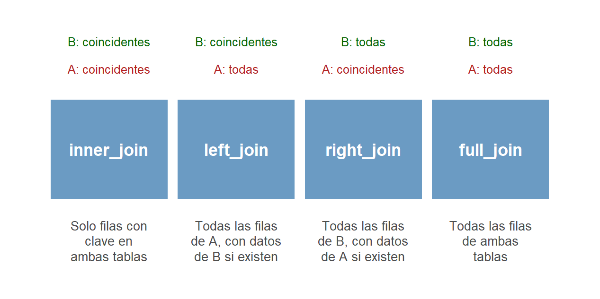
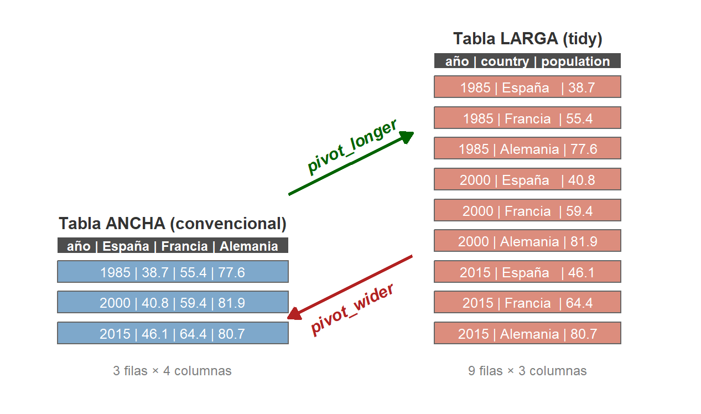
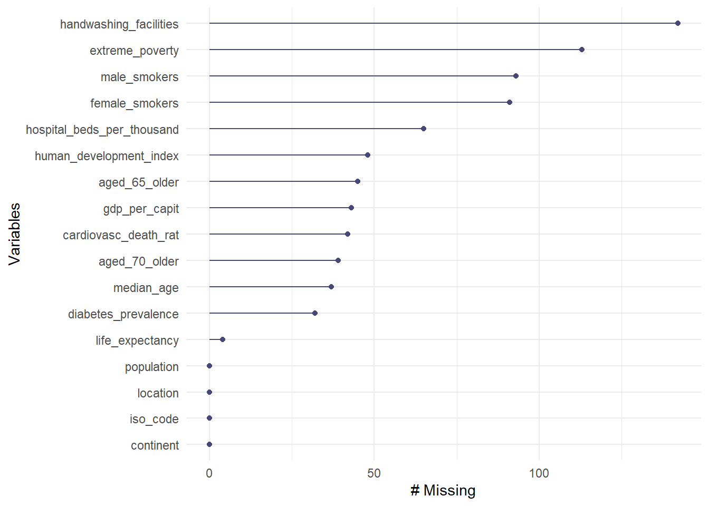
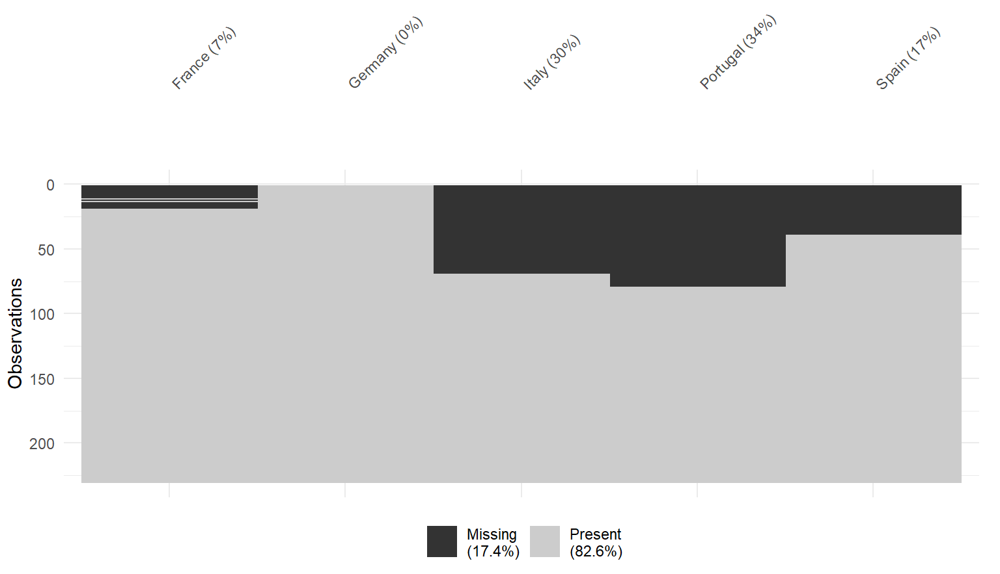

3 Procesado de datos
Fecha última actualización: 2026-08-22
Instalación y carga de librerías
# Se instalan automáticamente si no están disponibles en el sistema
if (!require(openxlsx)) install.packages('openxlsx')
library(openxlsx) # Lectura y escritura de ficheros Excel (.xlsx) sin dependencia de Java
if (!require(pxR)) install.packages('pxR')
library(pxR) # Lectura de ficheros en formato PC-Axis (INE, ISTAC)
if (!require(jsonlite)) install.packages('jsonlite')
library(jsonlite) # Lectura y escritura de datos en formato JSON (útil con APIs web)
if (!require(arrow)) install.packages('arrow')
library(arrow) # Lectura y escritura del formato columnar Parquet (interoperable con Python/Spark)
if (!require(skimr)) install.packages('skimr')
library(skimr) # Resumen exploratorio completo de una tabla en una sola llamada (skim)
if (!require(janitor)) install.packages('janitor')
library(janitor) # Limpieza de nombres de columnas y utilidades de depuración (clean_names)
if (!require(naniar)) install.packages('naniar')
library(naniar) # Visualización y análisis de valores faltantes (gg_miss_var)
if (!require(tidyverse)) install.packages('tidyverse')
library(tidyverse) # Ecosistema completo de manipulación de datos: dplyr, tidyr, readr, ggplot2, etc.
source("../utilidades.R") # Funciones auxiliares del curso (aedv_left_join_nearest_string, aedv_candidatos, aedv_left_join_completo)Librerías utilizadas en este capítulo
tidyverse: la herramienta central del capítulo. No es una librería sino un conjunto de ellas, que se cargan de una vez:readr(lectura de CSV y TSV),dplyr(transformación de tablas),tidyr(cambios de formato) yggplot2(gráficos), entre otras.openxlsx: lectura y escritura de hojas de cálculo de Excel (.xlsx). A diferencia de otras alternativas, no necesita tener Java instalado.pxR: lectura del formato PC-Axis (.px), en el que el INE y el ISTAC publican sus tablas.jsonlite: lectura y escritura del formato JSON, el habitual de las APIs web.arrow: lectura y escritura del formato Parquet. Es la que permite que una tabla guardada desdeRse lea después desde Python o Spark.skimr: el resumen exploratorio de una tabla completa, conskim().janitor: limpieza de los nombres de las columnas, conclean_names().naniar: visualización del patrón de los valores ausentes, congg_miss_var()yvis_miss().
Rara vez los datos se encuentran organizados exactamente en la forma que requiere nuestro análisis. De hecho, con frecuencia la tarea más compleja de una exploración de datos es precisamente localizar, extraer y comprender cómo están estructurados. Por esta razón, la primera etapa de cualquier análisis de datos consiste en procesarlos hasta obtener la forma y estructura deseadas, y es a este proceso al que dedicaremos buena parte de la atención en este capítulo. Como referencia rápida puede consultarse la ficha resumen de transformación de datos.
En primer lugar, presentaremos las principales fuentes de datos que utilizaremos a lo largo del curso. Como se verá, se han escogido bases de datos actuales sobre temas de interés general, lo que resulta más motivador que los conjuntos de datos de ejemplo incluidos por defecto en R que se suelen emplear en los cursos habituales de análisis de datos.
3.1 Bases de datos
Las fuentes principales de información que vamos a usar para ilustrar los contenidos del curso son las siguientes bases de datos de interés general:
OWID: datos a nivel mundial sobre temas de actualidad
UNdata: datos de la organización de las Naciones Unidas.
Eurostat: Oficina de estadística de la Unión Europea (ver Eurostat.html)
INE: Instituto Nacional de Estadística.
ISTAC : Instituto Canario de Estadística
World Bank : Organización que promueve el crecimiento sostenible en el mundo.
UNICEF : datos de UNICEF
OMS : Organización mundial de la salud
Kaggle : Kaggle es una plataforma muy popular para compartir datos. Tiene la ventaja de que posee una gran variedad de todo tipo de datos pero hay que tener precaución porque cualquier persona puede subir datos y ello puede comprometer su fiabilidad. Kaggle asigna a cada conjunto de datos el valor “Usability” que se puede interpretar como un factor de calidad de los datos que incluye la fiabilidad de las fuentes de los datos. Es importante usar datos con un valor alto de “Usability” y en particular, dentro de “Usability”, que tengan un valor alto del factor “Credibility”.
En este libro también utilizaremos algunas bases de datos almacenadas en un repositorio local de datos llamado data. Los ficheros referenciados en este libro a este repositorio se pueden localizar en la dirección https://ctim.es/AEDV/data/. Estas bases de datos locales, en general, se han extraído de las bases de datos anteriores y por comodidad se han puesto en un repositorio local.
Además de estas bases de datos, R tiene una amplia colección de bases de datos de ejemplo directamente accesibles. Por ejemplo la base de datos con información de coches mtcars se utiliza mucho para ilustrar las funcionalidades de R
# La tabla mtcars es una de las bases de datos de ejemplo clásicas de R,
# con información técnica de 32 modelos de automóviles de los años 70.
head(mtcars)## mpg cyl disp hp drat wt qsec vs am gear carb
## Mazda RX4 21.0 6 160 110 3.90 2.620 16.46 0 1 4 4
## Mazda RX4 Wag 21.0 6 160 110 3.90 2.875 17.02 0 1 4 4
## Datsun 710 22.8 4 108 93 3.85 2.320 18.61 1 1 4 1
## Hornet 4 Drive 21.4 6 258 110 3.08 3.215 19.44 1 0 3 1
## Hornet Sportabout 18.7 8 360 175 3.15 3.440 17.02 0 0 3 2
## Valiant 18.1 6 225 105 2.76 3.460 20.22 1 0 3 1Estas bases de datos incorporadas en R no las utilizaremos en este curso.
3.2 Formatos de ficheros de datos
Para acceder a los datos, habitualmente se leen desde un fichero donde están almacenados en forma de tabla. A continuación se presentan los formatos de fichero más habituales y cómo leerlos con las librerías correspondientes. Una ventaja importante de las librerías que utilizamos es que permiten leer los datos directamente desde un servidor web. Como referencia rápida para la lectura de datos puede consultarse la ficha resumen de importación de datos.
Formato CSV
El formato CSV consiste en un texto plano, es decir, contiene los valores de la tabla sin ninguna otra información sobre si se trata de fechas, números, caracteres, etc. Se puede editar con cualquier editor de texto (como NOTEPAD) y los campos están separados entre sí por una coma y los decimales se expresan con puntos. Para leer ficheros CSV utilizaremos la función read_csv de la librería readr incluida en la librería tidyverse. Si la tabla se ha creado a partir del idioma español, es posible que los campos en la tabla estén separados por el símbolo ; y además los decimales de los números se expresan con comas. En ese caso utilizaremos la función de lectura read_csv2. Si el delimitador entre campos no es ni una coma ni un punto y coma, podemos usar la función read_delim que permite declarar cualquier delimitador entre campos.
read_csv (readr) vs. read.csv (R base)
En este curso utilizamos read_csv de la librería readr (incluida en tidyverse) en lugar de la función read.csv de R base. Las principales ventajas de read_csv son: es significativamente más rápida en ficheros grandes, devuelve un tibble directamente (en lugar de un data.frame), no convierte automáticamente los strings en factors, y muestra al leer un resumen con el tipo detectado de cada columna, lo que facilita identificar problemas de tipo. En general, recomendamos usar read_csv salvo que haya una razón específica para usar read.csv.
Un problema que surge con cierta frecuencia al leer ficheros de texto es que estos ficheros admiten diferentes tipos de codificación para los caracteres especiales como acentos, etc.. La codificación estándar que espera encontrar por defecto R es la denominada UTF-8. Si un fichero de texto nos da problemas de lectura y no vemos ninguna razón, lo primero que debemos intentar es abrir el fichero con NOTEPAD, convertir la codificación a UTF-8, salvar el fichero y volvemos a intentar leerlo desde R. A continuación leeremos un fichero CSV con la información de la población mundial.
# Leemos el fichero CSV de la OWID con datos de población mundial.
# glimpse() imprime la estructura de la tabla: tipos de columnas y primeros valores.
owid_population <- read_csv("https://ctim.es/AEDV/data/owid_population.csv")|>
as_tibble()
glimpse(owid_population)## Rows: 50,159
## Columns: 4
## $ Entity <chr> "Afghanistan", "Afghanistan", "Afg…
## $ Code <chr> "AFG", "AFG", "AFG", "AFG", "AFG",…
## $ Year <dbl> 1800, 1801, 1802, 1803, 1804, 1805…
## $ `Population (historical estimates)` <dbl> 3280000, 3280000, 3280000, 3280000…## # A tibble: 50,159 × 4
## Entity Code Year `Population (historical estimates)`
## <chr> <chr> <dbl> <dbl>
## 1 Afghanistan AFG 1800 3280000
## 2 Afghanistan AFG 1801 3280000
## 3 Afghanistan AFG 1802 3280000
## 4 Afghanistan AFG 1803 3280000
## 5 Afghanistan AFG 1804 3280000
## 6 Afghanistan AFG 1805 3280000
## 7 Afghanistan AFG 1806 3280000
## 8 Afghanistan AFG 1807 3280000
## 9 Afghanistan AFG 1808 3280000
## 10 Afghanistan AFG 1809 3280000
## # ℹ 50,149 more rowsFormato TSV
El formato TSV (Tab-separated values) es un formato similar al CSV donde se usan tabuladores para separar los datos. Para leer ficheros TSV utilizaremos la función read_tsv. Veamos un ejemplo con datos de una consulta al ISTAC sobre la renta media disponible de los habitantes de los municipios canarios.
ISTAC_RentaDisponible <- read_tsv("https://ctim.es/AEDV/data/ISTAC_RentaDisponibleMunicipios.tsv")|>
as_tibble()
glimpse(ISTAC_RentaDisponible)## Rows: 4,320
## Columns: 7
## $ GEOGRAPHICAL <chr> "Canarias", "Canarias", "Canarias", "Canarias", "Can…
## $ GEOGRAPHICAL_CODE <chr> "CCAA_CANARIAS", "CCAA_CANARIAS", "CCAA_CANARIAS", "…
## $ TIME <dbl> 2021, 2021, 2021, 2021, 2021, 2021, 2021, 2021, 2021…
## $ TIME_CODE <dbl> 2021, 2021, 2021, 2021, 2021, 2021, 2021, 2021, 2021…
## $ MEASURE <chr> "Tasa variación interperiódica", "Variación interper…
## $ MEASURE_CODE <chr> "INTERPERIOD_PERCENTAGE_RATE", "INTERPERIOD_PUNTUAL_…
## $ OBS_VALUE <chr> "4.06", "810.84", "810.84", "4.06", "20793.34", "6.7…## # A tibble: 4,320 × 7
## GEOGRAPHICAL GEOGRAPHICAL_CODE TIME TIME_CODE MEASURE MEASURE_CODE OBS_VALUE
## <chr> <chr> <dbl> <dbl> <chr> <chr> <chr>
## 1 Canarias CCAA_CANARIAS 2021 2021 Tasa v… INTERPERIOD… 4.06
## 2 Canarias CCAA_CANARIAS 2021 2021 Variac… INTERPERIOD… 810.84
## 3 Canarias CCAA_CANARIAS 2021 2021 Variac… ANNUAL_PUNT… 810.84
## 4 Canarias CCAA_CANARIAS 2021 2021 Tasa v… ANNUAL_PERC… 4.06
## 5 Canarias CCAA_CANARIAS 2021 2021 Dato ABSOLUTE 20793.34
## 6 Fuerteventu… ISLA_FUERTEVENTU… 2021 2021 Tasa v… INTERPERIOD… 6.72
## 7 Fuerteventu… ISLA_FUERTEVENTU… 2021 2021 Variac… INTERPERIOD… 1213.11
## 8 Fuerteventu… ISLA_FUERTEVENTU… 2021 2021 Variac… ANNUAL_PUNT… 1213.11
## 9 Fuerteventu… ISLA_FUERTEVENTU… 2021 2021 Tasa v… ANNUAL_PERC… 6.72
## 10 Fuerteventu… ISLA_FUERTEVENTU… 2021 2021 Dato ABSOLUTE 19276.63
## # ℹ 4,310 more rowsFormato EXCEL
Para leer hojas de cálculo Excel se utiliza la librería openxlsx, que permite leer archivos tanto locales como alojados en un servidor web. Como ejemplo, leeremos datos publicados por la OWID. Aunque es posible leer directamente desde su servidor, la base de datos completa es muy extensa, por lo que trabajaremos con una versión simplificada almacenada en el repositorio local del curso:
# Leemos desde el repositorio local una tabla simplificada de la OWID
# con indicadores básicos por países (población, esperanza de vida, PIB, etc.)
owid_country <- read.xlsx("https://ctim.es/AEDV/data/owid_country.xlsx",sheet=1) |>
as_tibble()
glimpse(owid_country) # glimpse() imprime la estructura de la tabla## Rows: 237
## Columns: 17
## $ iso_code <chr> "ABW", "AFG", "AGO", "AIA", "ALB", "AND", "…
## $ location <chr> "Aruba", "Afghanistan", "Angola", "Anguilla…
## $ continent <chr> "North America", "Asia", "Africa", "North A…
## $ population <dbl> 106459, 41128772, 35588996, 15877, 2842318,…
## $ median_age <dbl> 41.2, 18.6, 16.8, NA, 38.0, NA, 34.0, 31.9,…
## $ life_expectancy <dbl> 76.29, 64.83, 61.15, 81.88, 78.57, 83.73, 7…
## $ aged_65_older <dbl> 13.085, 2.581, 2.405, NA, 13.188, NA, 1.144…
## $ aged_70_older <dbl> 7.452, 1.337, 1.362, NA, 8.643, NA, 0.526, …
## $ gdp_per_capit <dbl> 35973.781, 1803.987, 5819.495, NA, 11803.43…
## $ extreme_poverty <dbl> NA, NA, NA, NA, 1.1, NA, NA, 0.6, 1.8, NA, …
## $ cardiovasc_death_rat <dbl> NA, 597.029, 276.045, NA, 304.195, 109.135,…
## $ diabetes_prevalence <dbl> 11.62, 9.59, 3.94, NA, 10.08, 7.97, 17.26, …
## $ female_smokers <dbl> NA, NA, NA, NA, 7.1, 29.0, 1.2, 16.2, 1.5, …
## $ male_smokers <dbl> NA, NA, NA, NA, 51.2, 37.8, 37.4, 27.7, 52.…
## $ handwashing_facilities <dbl> NA, 37.746, 26.664, NA, NA, NA, NA, NA, 94.…
## $ hospital_beds_per_thousand <dbl> NA, 0.500, NA, NA, 2.890, NA, 1.200, 5.000,…
## $ human_development_index <dbl> NA, 0.511, 0.581, NA, 0.795, 0.868, 0.890, …Como la tabla tiene muchas columnas la imprimimos usando tabla-scroll vista en el capítulo anterior.
<div class="tabla-scroll">
```{r}
knitr::kable(owid_country |> slice(1:5)) # imprimimos 5 primera filas
```
</div>| iso_code | location | continent | population | median_age | life_expectancy | aged_65_older | aged_70_older | gdp_per_capit | extreme_poverty | cardiovasc_death_rat | diabetes_prevalence | female_smokers | male_smokers | handwashing_facilities | hospital_beds_per_thousand | human_development_index |
|---|---|---|---|---|---|---|---|---|---|---|---|---|---|---|---|---|
| ABW | Aruba | North America | 106459 | 41.2 | 76.29 | 13.085 | 7.452 | 35973.781 | NA | NA | 11.62 | NA | NA | NA | NA | NA |
| AFG | Afghanistan | Asia | 41128772 | 18.6 | 64.83 | 2.581 | 1.337 | 1803.987 | NA | 597.029 | 9.59 | NA | NA | 37.746 | 0.50 | 0.511 |
| AGO | Angola | Africa | 35588996 | 16.8 | 61.15 | 2.405 | 1.362 | 5819.495 | NA | 276.045 | 3.94 | NA | NA | 26.664 | NA | 0.581 |
| AIA | Anguilla | North America | 15877 | NA | 81.88 | NA | NA | NA | NA | NA | NA | NA | NA | NA | NA | NA |
| ALB | Albania | Europe | 2842318 | 38.0 | 78.57 | 13.188 | 8.643 | 11803.431 | 1.1 | 304.195 | 10.08 | 7.1 | 51.2 | NA | 2.89 | 0.795 |
Nota:
readxlvsopenxlsx. La libreríareadxl, que forma parte del ecosistematidyverse(y es la que aparece en R for Data Science y en la mayoría del material actual), es otra opción muy extendida para leer Excel conread_excel(). En este curso usamosopenxlsxporque lee directamente ficheros alojados en URLs (algo quereadxlno hace sin descargar antes el fichero) y porque además permite escribir ficheros.xlsx. Ambas son válidas; conviene conocer las dos.
Formato PC-Axis
El formato PC-Axis, especializado en el almacenamiento de datos estadísticos, es el utilizado por el INE y el ISTAC para exportar datos. Puede editarse con cualquier editor de texto plano. Para leer este formato se utiliza la función read.px de la librería pxR. A continuación se leen datos de la población por municipios de las Islas Canarias, obtenidos mediante una consulta al ISTAC y almacenados en el repositorio local:
# Leemos un fichero PC-Axis del ISTAC con datos de población por municipios canarios.
# La función read.px() preserva la estructura multidimensional de la consulta.
istac_poblacion <- read.px("https://ctim.es/AEDV/data/PoblacionMunicipiosCanarios.px")|>
as_tibble()
istac_poblacion |>
print(n=5)## # A tibble: 2,112 × 5
## Sexos Años Edades.año.a.año Municipios.por.islas value
## <fct> <fct> <fct> <fct> <dbl>
## 1 AMBOS SEXOS 2021 TOTAL CANARIAS 2172944
## 2 AMBOS SEXOS 2020 TOTAL CANARIAS 2175952
## 3 AMBOS SEXOS 2019 TOTAL CANARIAS 2153389
## 4 AMBOS SEXOS 2018 TOTAL CANARIAS 2127685
## 5 AMBOS SEXOS 2017 TOTAL CANARIAS 2108121
## # ℹ 2,107 more rowsLos metadatos se pierden al cargar el fichero como tibble
Las bases de datos del INE y el ISTAC se obtienen a partir de una consulta que se hace en su servidor web, y es la consulta la que genera el fichero con los datos. El fichero .px incluye, en modo texto, metadatos sobre la tabla (unidades, fuente, notas) que se pierden al cargar los datos en un tibble. Conviene abrir el fichero con un editor de texto para consultarlos: sin ellos es fácil interpretar mal una columna, porque nada en la tabla dice en qué unidades está medida.
Si la lectura de un fichero PC-Axis falla o genera problemas, siempre podemos descargar la misma consulta en otro formato, por ejemplo CSV, e intentar cargar los datos desde ahí.
Formato RDS
RDS es un formato nativo de R que guarda los datos en formato binario comprimido. Tiene algunas ventajas importantes como que necesita mucho menos espacio en disco que un formato de texto como el CSV, las operaciones de lectura/escritura son más rápidas y conserva los tipos de datos (numérico, fecha, etc..) de las variables (columnas de la tabla). Además puede usarse también para guardar cualquier tipo de objeto generado por R (no solo tablas).
Para guardar una tabla en un archivo en formato RDS usamos la función saveRDS:
Para leer un archivo RDS usamos la función readRDS
## Rows: 50,159
## Columns: 4
## $ Entity <chr> "Afghanistan", "Afghanistan", "Afg…
## $ Code <chr> "AFG", "AFG", "AFG", "AFG", "AFG",…
## $ Year <dbl> 1800, 1801, 1802, 1803, 1804, 1805…
## $ `Population (historical estimates)` <dbl> 3280000, 3280000, 3280000, 3280000…Si leemos el archivo a través de una URL debemos usar la función url para “envolver” la dirección web. Al hacer esto se abre una conexión con la URL que permite gestionar la descompresión que se requiere para leer el fichero RDS:
## Rows: 50,159
## Columns: 4
## $ Entity <chr> "Afghanistan", "Afghanistan", "Afg…
## $ Code <chr> "AFG", "AFG", "AFG", "AFG", "AFG",…
## $ Year <dbl> 1800, 1801, 1802, 1803, 1804, 1805…
## $ `Population (historical estimates)` <dbl> 3280000, 3280000, 3280000, 3280000…Formato Parquet
Parquet es un formato binario columnar creado en el ecosistema de big data y convertido hoy en el estándar de facto de la industria para almacenar tablas de datos: es el formato habitual en las empresas, en las plataformas en la nube y en muchos datasets grandes de portales como Kaggle. Comparte las ventajas del RDS frente al CSV (ocupa mucho menos espacio, se lee mucho más rápido y conserva los tipos de las columnas) con una ventaja adicional importante: es interoperable, es decir, el mismo fichero se puede leer desde R, Python (pandas), Spark o cualquier otra herramienta moderna de datos, mientras que el RDS solo se puede leer desde R. En R se gestiona con la librería arrow:
# Guardar una tabla en formato Parquet
write_parquet(owid_population, "owid_population.parquet")
# Leerla de nuevo (conserva los tipos de las columnas)
read_parquet("owid_population.parquet") |>
as_tibble() |>
glimpse()## Rows: 50,159
## Columns: 4
## $ Entity <chr> "Afghanistan", "Afghanistan", "Afg…
## $ Code <chr> "AFG", "AFG", "AFG", "AFG", "AFG",…
## $ Year <dbl> 1800, 1801, 1802, 1803, 1804, 1805…
## $ `Population (historical estimates)` <dbl> 3280000, 3280000, 3280000, 3280000…Gestionar datasets gigantescos
Cuando el fichero Parquet es demasiado grande para cargarlo entero en memoria, la librería duckdb permite consultarlo con sentencias SQL (o con la propia sintaxis de dplyr) leyendo del disco solo las columnas y filas necesarias. Es la opción estándar actual para explorar en un portátil datasets de decenas de gigabytes.
En este curso no usaremos el formato Parquet, porque el formato RDS, nativo de R, ya cubre nuestras necesidades; pero conviene saber que para abordar datasets gigantescos el formato Parquet es más adecuado.
Formato JSON
El formato JSON (JavaScript Object Notation) es un formato de intercambio de datos ligero y muy utilizado, especialmente por APIs web y servicios de datos en línea. Su estructura se basa en pares clave-valor y admite datos anidados, lo cual lo hace muy flexible pero requiere, a veces, más procesado que un CSV para obtener una tabla plana.
Para leer ficheros JSON utilizaremos la función fromJSON de la librería jsonlite. Esta función es capaz de leer tanto ficheros locales como URLs. Veamos un ejemplo con un fichero JSON que contiene datos básicos de países europeos:
## # A tibble: 5 × 6
## iso_code country continent population gdp_per_capita life_expectancy
## <chr> <chr> <chr> <int> <int> <dbl>
## 1 ESP Spain Europe 47420000 27063 83.6
## 2 FRA France Europe 67750000 38625 82.3
## 3 DEU Germany Europe 83240000 44550 80.9
## 4 ITA Italy Europe 59110000 31676 83.5
## 5 PRT Portugal Europe 10330000 22195 81.9También podemos construir un JSON directamente desde un string en R, lo cual es útil para entender su estructura:
json_texto <- '[
{"nombre": "Madrid", "temperatura": 32.5, "humedad": 25},
{"nombre": "Barcelona", "temperatura": 28.1, "humedad": 65},
{"nombre": "Las Palmas", "temperatura": 24.3, "humedad": 70}
]'
fromJSON(json_texto) |> as_tibble()## # A tibble: 3 × 3
## nombre temperatura humedad
## <chr> <dbl> <int>
## 1 Madrid 32.5 25
## 2 Barcelona 28.1 65
## 3 Las Palmas 24.3 70Para escribir datos en formato JSON usamos la función toJSON:
datos <- tibble(ciudad = c("Telde", "Arucas"), poblacion = c(102164, 38204))
toJSON(datos, pretty = TRUE)## [
## {
## "ciudad": "Telde",
## "poblacion": 102164
## },
## {
## "ciudad": "Arucas",
## "poblacion": 38204
## }
## ]El formato JSON es especialmente relevante cuando se trabaja con datos procedentes de APIs REST, que es una forma cada vez más habitual de acceder a datos actualizados de organismos públicos y privados.
Texto sin formato
En ocasiones, cuando los datos vienen dados por un fichero de texto, no están organizados como una tabla y la lectura del fichero usando las funciones anteriormente vistas puede dar lugar a errores. En ese caso tenemos que corregir y actualizar el fichero antes de cargarlo como tabla. Esto se puede hacer abriendo el fichero con un editor de texto y manipularlo manualmente. Una forma alternativa, y automática, de hacerlo desde R es usar la función read_lines que carga el fichero de texto como un vector que contiene las líneas del fichero y que no asume que tenga un formato de tabla con campos y registros identificables. Podemos editar este vector y volver a escribirlo actualizado usando la función write_lines.
UN_population2 <- read_lines("https://ctim.es/AEDV/data/UN_population.csv")
UN_population2[1] # imprimimos primera línea## [1] "T02,\"Population, density and surface area\",,,,,"## [1] "Region/Country/Area,,Year,Series,Value,Footnotes,Source"## [1] "1,\"Total, all countries or areas\",2010,Population mid-year estimates (millions),\"6,985.60\",,\"United Nations Population Division, New York, World Population Prospects: The 2022 Revision, last accessed July 2022.\""# eliminamos la primera línea
UN_population2 <- UN_population2[-1]
# sustituimos el string "Region/Country/Area" por "location"
UN_population2 <- gsub('Region/Country/Area','location',UN_population2)
# eliminamos todas las líneas que contienen el string "Total"
UN_population2 <- UN_population2[str_detect(UN_population2,"Total")==FALSE]
# escribimos el archivo actualizado
write_lines(UN_population2,"UN_population2.csv")3.3 Transformación de datos
El paquete dplyr
Funciones principales de dplyr
El paquete dplyr, incluido en tidyverse, es la herramienta principal para transformar y manipular tablas de datos en R. Proporciona un conjunto de funciones con una sintaxis consistente y legible, especialmente cuando se combina con el operador pipe |>.
Las funciones principales son: filter() (seleccionar filas), select() (seleccionar columnas), arrange() (ordenar filas), mutate() (crear o modificar columnas), rename() (renombrar columnas), group_by() + summarise() (agregar por grupos) y left_join() (combinar tablas).
filter()
Selecciona las filas de la tabla que cumplen una determinada condición. Por ejemplo, la siguiente instrucción filtra los países del continente europeo con más de 40 millones de habitantes:
# Filtramos países de Europa (continent=="Europe") con población superior a 40 millones
owid_country |>
filter(continent=="Europe" & population>4e7) |>
knitr::kable() | iso_code | location | continent | population | median_age | life_expectancy | aged_65_older | aged_70_older | gdp_per_capit | extreme_poverty | cardiovasc_death_rat | diabetes_prevalence | female_smokers | male_smokers | handwashing_facilities | hospital_beds_per_thousand | human_development_index |
|---|---|---|---|---|---|---|---|---|---|---|---|---|---|---|---|---|
| DEU | Germany | Europe | 83369840 | 46.6 | 81.33 | 21.453 | 15.957 | 45229.25 | NA | 156.139 | 8.31 | 28.2 | 33.1 | NA | 8.00 | 0.947 |
| ESP | Spain | Europe | 47558632 | 45.5 | 83.56 | 19.436 | 13.799 | 34272.36 | 1.0 | 99.403 | 7.17 | 27.4 | 31.4 | NA | 2.97 | 0.904 |
| FRA | France | Europe | 67813000 | 42.0 | 82.66 | 19.718 | 13.079 | 38605.67 | NA | 86.060 | 4.77 | 30.1 | 35.6 | NA | 5.98 | 0.901 |
| GBR | United Kingdom | Europe | 67508936 | 40.8 | 81.32 | 18.517 | 12.527 | 39753.24 | 0.2 | 122.137 | 4.28 | 20.0 | 24.7 | NA | 2.54 | 0.932 |
| ITA | Italy | Europe | 59037472 | 47.9 | 83.51 | 23.021 | 16.240 | 35220.08 | 2.0 | 113.151 | 4.78 | 19.8 | 27.8 | NA | 3.18 | 0.892 |
| RUS | Russia | Europe | 144713312 | 39.6 | 72.58 | 14.178 | 9.393 | 24765.95 | 0.1 | 431.297 | 6.18 | 23.4 | 58.3 | NA | 8.05 | 0.824 |
Con str_detect podemos filtrar a partir del contenido de un campo de texto. El argumento regex(..., ignore_case=TRUE) hace la búsqueda insensible a mayúsculas:
# Filtramos países cuyo nombre contiene "pa" (insensible a mayúsculas/minúsculas)
owid_country |>
filter(str_detect(location, regex("pa", ignore_case = TRUE))) |>
knitr::kable() | iso_code | location | continent | population | median_age | life_expectancy | aged_65_older | aged_70_older | gdp_per_capit | extreme_poverty | cardiovasc_death_rat | diabetes_prevalence | female_smokers | male_smokers | handwashing_facilities | hospital_beds_per_thousand | human_development_index |
|---|---|---|---|---|---|---|---|---|---|---|---|---|---|---|---|---|
| ESP | Spain | Europe | 47558632 | 45.5 | 83.56 | 19.436 | 13.799 | 34272.360 | 1.0 | 99.403 | 7.17 | 27.4 | 31.4 | NA | 2.97 | 0.904 |
| JPN | Japan | Asia | 123951696 | 48.2 | 84.63 | 27.049 | 18.493 | 39002.223 | NA | 79.370 | 5.72 | 11.2 | 33.7 | NA | 13.05 | 0.919 |
| MAF | Saint Martin (French part) | North America | 31816 | NA | 82.08 | NA | NA | NA | NA | NA | NA | NA | NA | NA | NA | NA |
| NPL | Nepal | Asia | 30547586 | 25.0 | 70.78 | 5.809 | 3.212 | 2442.804 | 15.0 | 260.797 | 7.26 | 9.5 | 37.8 | 47.782 | 0.30 | 0.602 |
| PAK | Pakistan | Asia | 235824864 | 23.5 | 67.27 | 4.495 | 2.780 | 5034.708 | 4.0 | 423.031 | 8.35 | 2.8 | 36.7 | 59.607 | 0.60 | 0.557 |
| PAN | Panama | North America | 4408582 | 29.7 | 78.51 | 7.918 | 5.030 | 22267.037 | 2.2 | 128.346 | 8.33 | 2.4 | 9.9 | NA | 2.30 | 0.815 |
| PLW | Palau | Oceania | 18084 | NA | 73.70 | NA | NA | 13240.405 | NA | NA | 15.89 | 7.7 | 22.7 | NA | 4.80 | 0.826 |
| PNG | Papua New Guinea | Oceania | 10142625 | 22.6 | 64.50 | 3.808 | 2.142 | 3823.194 | NA | 561.494 | 17.65 | 23.5 | 48.8 | NA | NA | 0.555 |
| PRY | Paraguay | South America | 6780745 | 26.5 | 74.25 | 6.378 | 3.833 | 8827.010 | 1.7 | 199.128 | 8.27 | 5.0 | 21.6 | 79.602 | 1.30 | 0.728 |
| PSE | Palestine | Asia | 5250076 | 20.4 | 74.05 | 3.043 | 1.726 | 4449.898 | 1.0 | 265.910 | 10.59 | NA | NA | NA | NA | 0.708 |
| SXM | Sint Maarten (Dutch part) | North America | 44192 | NA | 78.95 | NA | NA | 36327.232 | NA | NA | NA | NA | NA | NA | NA | NA |
select()
Selecciona un subconjunto de columnas. Se pueden indicar individualmente o en rangos usando ::
# Seleccionamos solo las columnas desde life_expectancy hasta gdp_per_capit,
owid_country |>
filter(continent=="Europe" & population>4e7) |>
select(location,life_expectancy:gdp_per_capit) |>
knitr::kable()| location | life_expectancy | aged_65_older | aged_70_older | gdp_per_capit |
|---|---|---|---|---|
| Germany | 81.33 | 21.453 | 15.957 | 45229.25 |
| Spain | 83.56 | 19.436 | 13.799 | 34272.36 |
| France | 82.66 | 19.718 | 13.079 | 38605.67 |
| United Kingdom | 81.32 | 18.517 | 12.527 | 39753.24 |
| Italy | 83.51 | 23.021 | 16.240 | 35220.08 |
| Russia | 72.58 | 14.178 | 9.393 | 24765.95 |
Para excluir columnas basta anteponer el signo -:
# Excluimos las columnas iso_code y continent del resultado
owid_country |>
filter(continent=="Europe" & population>4e7) |>
arrange(desc(population)) |>
select(-iso_code,-continent) |>
knitr::kable()| location | population | median_age | life_expectancy | aged_65_older | aged_70_older | gdp_per_capit | extreme_poverty | cardiovasc_death_rat | diabetes_prevalence | female_smokers | male_smokers | handwashing_facilities | hospital_beds_per_thousand | human_development_index |
|---|---|---|---|---|---|---|---|---|---|---|---|---|---|---|
| Russia | 144713312 | 39.6 | 72.58 | 14.178 | 9.393 | 24765.95 | 0.1 | 431.297 | 6.18 | 23.4 | 58.3 | NA | 8.05 | 0.824 |
| Germany | 83369840 | 46.6 | 81.33 | 21.453 | 15.957 | 45229.25 | NA | 156.139 | 8.31 | 28.2 | 33.1 | NA | 8.00 | 0.947 |
| France | 67813000 | 42.0 | 82.66 | 19.718 | 13.079 | 38605.67 | NA | 86.060 | 4.77 | 30.1 | 35.6 | NA | 5.98 | 0.901 |
| United Kingdom | 67508936 | 40.8 | 81.32 | 18.517 | 12.527 | 39753.24 | 0.2 | 122.137 | 4.28 | 20.0 | 24.7 | NA | 2.54 | 0.932 |
| Italy | 59037472 | 47.9 | 83.51 | 23.021 | 16.240 | 35220.08 | 2.0 | 113.151 | 4.78 | 19.8 | 27.8 | NA | 3.18 | 0.892 |
| Spain | 47558632 | 45.5 | 83.56 | 19.436 | 13.799 | 34272.36 | 1.0 | 99.403 | 7.17 | 27.4 | 31.4 | NA | 2.97 | 0.904 |
arrange()
Ordena las filas de la tabla según uno o varios campos. desc() invierte el orden:
owid_country |>
filter(continent=="Europe" & population>4e7) |>
arrange(desc(population)) |> # Orden descendente: el país más poblado aparece primero
knitr::kable()| iso_code | location | continent | population | median_age | life_expectancy | aged_65_older | aged_70_older | gdp_per_capit | extreme_poverty | cardiovasc_death_rat | diabetes_prevalence | female_smokers | male_smokers | handwashing_facilities | hospital_beds_per_thousand | human_development_index |
|---|---|---|---|---|---|---|---|---|---|---|---|---|---|---|---|---|
| RUS | Russia | Europe | 144713312 | 39.6 | 72.58 | 14.178 | 9.393 | 24765.95 | 0.1 | 431.297 | 6.18 | 23.4 | 58.3 | NA | 8.05 | 0.824 |
| DEU | Germany | Europe | 83369840 | 46.6 | 81.33 | 21.453 | 15.957 | 45229.25 | NA | 156.139 | 8.31 | 28.2 | 33.1 | NA | 8.00 | 0.947 |
| FRA | France | Europe | 67813000 | 42.0 | 82.66 | 19.718 | 13.079 | 38605.67 | NA | 86.060 | 4.77 | 30.1 | 35.6 | NA | 5.98 | 0.901 |
| GBR | United Kingdom | Europe | 67508936 | 40.8 | 81.32 | 18.517 | 12.527 | 39753.24 | 0.2 | 122.137 | 4.28 | 20.0 | 24.7 | NA | 2.54 | 0.932 |
| ITA | Italy | Europe | 59037472 | 47.9 | 83.51 | 23.021 | 16.240 | 35220.08 | 2.0 | 113.151 | 4.78 | 19.8 | 27.8 | NA | 3.18 | 0.892 |
| ESP | Spain | Europe | 47558632 | 45.5 | 83.56 | 19.436 | 13.799 | 34272.36 | 1.0 | 99.403 | 7.17 | 27.4 | 31.4 | NA | 2.97 | 0.904 |
mutate()
Crea nuevas columnas o modifica columnas existentes a partir de operaciones sobre otras columnas:
# Calculamos el PIB total (gdp_per_capit × population) y ordenamos de mayor a menor
owid_country |>
mutate( gdp = gdp_per_capit * population) |>
select(location,population,gdp) |>
arrange(desc(gdp)) |>
head(10) |>
knitr::kable()| location | population | gdp |
|---|---|---|
| China | 1425887360 | 2.182850e+13 |
| United States | 338289856 | 1.834392e+13 |
| India | 1417173120 | 9.107710e+12 |
| Japan | 123951696 | 4.834392e+12 |
| Germany | 83369840 | 3.770755e+12 |
| Russia | 144713312 | 3.583963e+12 |
| Indonesia | 275501344 | 3.082514e+12 |
| Brazil | 215313504 | 3.036664e+12 |
| United Kingdom | 67508936 | 2.683699e+12 |
| France | 67813000 | 2.617966e+12 |
across()
La función across permite aplicar una misma operación a múltiples columnas simultáneamente dentro de mutate o summarise. Esto evita repetir código cuando queremos hacer lo mismo en varias columnas. El primer argumento selecciona las columnas y el segundo define la función a aplicar:
# Redondear a 1 decimal todas las columnas numéricas entre life_expectancy y gdp_per_capit
owid_country |>
mutate(across(life_expectancy:gdp_per_capit, ~round(., 1))) |>
select(location, life_expectancy:gdp_per_capit) |>
head(5)## # A tibble: 5 × 5
## location life_expectancy aged_65_older aged_70_older gdp_per_capit
## <chr> <dbl> <dbl> <dbl> <dbl>
## 1 Aruba 76.3 13.1 7.5 35974.
## 2 Afghanistan 64.8 2.6 1.3 1804
## 3 Angola 61.1 2.4 1.4 5820.
## 4 Anguilla 81.9 NA NA NA
## 5 Albania 78.6 13.2 8.6 11803.La sintaxis ~round(., 1) es una fórmula anónima donde el punto . representa cada valor de la columna.
case_when()
La función case_when es la versión vectorizada del if-else y resulta muy útil dentro de mutate para crear nuevas variables categóricas a partir de condiciones sobre los datos. Cada condición se escribe como condición ~ valor_asignado, y se evalúan en orden (la primera condición que se cumple determina el resultado):
owid_country |>
mutate(nivel_desarrollo = case_when(
gdp_per_capit >= 30000 ~ "Alto",
gdp_per_capit >= 10000 ~ "Medio",
gdp_per_capit >= 3000 ~ "Bajo",
is.na(gdp_per_capit) ~ NA_character_,
TRUE ~ "Muy bajo"
)) |>
select(location, continent, gdp_per_capit, nivel_desarrollo) |>
head(10)## # A tibble: 10 × 4
## location continent gdp_per_capit nivel_desarrollo
## <chr> <chr> <dbl> <chr>
## 1 Aruba North America 35974. Alto
## 2 Afghanistan Asia 1804. Muy bajo
## 3 Angola Africa 5819. Bajo
## 4 Anguilla North America NA <NA>
## 5 Albania Europe 11803. Medio
## 6 Andorra Europe NA <NA>
## 7 United Arab Emirates Asia 67293. Alto
## 8 Argentina South America 18934. Medio
## 9 Armenia Asia 8788. Bajo
## 10 American Samoa Oceania NA <NA>La última línea TRUE ~ "Muy bajo" funciona como un “else” que recoge todos los casos no cubiertos por las condiciones anteriores. Usamos NA_character_ en lugar de NA porque case_when requiere que todos los valores devueltos sean del mismo tipo.
# Verificar la distribución de la nueva variable
owid_country |>
mutate(nivel_desarrollo = case_when(
gdp_per_capit >= 30000 ~ "Alto",
gdp_per_capit >= 10000 ~ "Medio",
gdp_per_capit >= 3000 ~ "Bajo",
is.na(gdp_per_capit) ~ NA_character_,
TRUE ~ "Muy bajo"
)) |>
count(nivel_desarrollo, sort = TRUE)## # A tibble: 5 × 2
## nivel_desarrollo n
## <chr> <int>
## 1 Medio 64
## 2 Bajo 49
## 3 Alto 44
## 4 <NA> 43
## 5 Muy bajo 37En este último ejemplo usamos count(), que es un atajo muy práctico equivalente a group_by(variable) |> summarise(n = n()).
relocate()
Cambia el orden de las columnas
owid_country |>
relocate(location) |> # pone location en primer lugar
relocate(continent,.after=location) |>
relocate(life_expectancy,.after=continent) |>
slice(1:5) |>
knitr::kable()| location | continent | life_expectancy | iso_code | population | median_age | aged_65_older | aged_70_older | gdp_per_capit | extreme_poverty | cardiovasc_death_rat | diabetes_prevalence | female_smokers | male_smokers | handwashing_facilities | hospital_beds_per_thousand | human_development_index |
|---|---|---|---|---|---|---|---|---|---|---|---|---|---|---|---|---|
| Aruba | North America | 76.29 | ABW | 106459 | 41.2 | 13.085 | 7.452 | 35973.781 | NA | NA | 11.62 | NA | NA | NA | NA | NA |
| Afghanistan | Asia | 64.83 | AFG | 41128772 | 18.6 | 2.581 | 1.337 | 1803.987 | NA | 597.029 | 9.59 | NA | NA | 37.746 | 0.50 | 0.511 |
| Angola | Africa | 61.15 | AGO | 35588996 | 16.8 | 2.405 | 1.362 | 5819.495 | NA | 276.045 | 3.94 | NA | NA | 26.664 | NA | 0.581 |
| Anguilla | North America | 81.88 | AIA | 15877 | NA | NA | NA | NA | NA | NA | NA | NA | NA | NA | NA | NA |
| Albania | Europe | 78.57 | ALB | 2842318 | 38.0 | 13.188 | 8.643 | 11803.431 | 1.1 | 304.195 | 10.08 | 7.1 | 51.2 | NA | 2.89 | 0.795 |
rename()
Cambia el nombre de los campos/columnas
owid_country |>
filter(continent=="Europe" & population>4e7) |>
arrange(desc(population)) |>
select(location,population,median_age) |>
rename(country = location)|>
knitr::kable( caption = "Países europeos ordenados por su población")| country | population | median_age |
|---|---|---|
| Russia | 144713312 | 39.6 |
| Germany | 83369840 | 46.6 |
| France | 67813000 | 42.0 |
| United Kingdom | 67508936 | 40.8 |
| Italy | 59037472 | 47.9 |
| Spain | 47558632 | 45.5 |
str_replace
Esta función reemplaza un string por otro dentro de un vector de strings
owid_country|>
mutate(location = str_replace(location,"United States","USA")) |>
filter(location=="USA") |>
knitr::kable()| iso_code | location | continent | population | median_age | life_expectancy | aged_65_older | aged_70_older | gdp_per_capit | extreme_poverty | cardiovasc_death_rat | diabetes_prevalence | female_smokers | male_smokers | handwashing_facilities | hospital_beds_per_thousand | human_development_index |
|---|---|---|---|---|---|---|---|---|---|---|---|---|---|---|---|---|
| USA | USA | North America | 338289856 | 38.3 | 78.86 | 15.413 | 9.732 | 54225.45 | 1.2 | 151.089 | 10.79 | 19.1 | 24.6 | NA | 2.77 | 0.926 |
Para cambiar un valor en todo el tibble podemos hacer:
# Usamos una copia temporal para no modificar la tabla original
owid_temp <- owid_country
owid_temp[owid_temp=="United States"] <- "USA"
owid_temp |>
select(iso_code,location)|>
filter(location=="USA")## # A tibble: 1 × 2
## iso_code location
## <chr> <chr>
## 1 USA USAPrecaución: La asignación directa
tabla[tabla=="valor"] <- "nuevo_valor"modifica el tibble de forma permanente. Si se usa sin cuidado puede alterar los datos para el resto del análisis. Es recomendable trabajar sobre una copia o usarmutateconstr_replaceque no modifica la tabla original a menos que se reasigne.
recode()
Cuando hay que sustituir varios valores concretos a la vez, recode() resulta más cómodo que encadenar varias llamadas a str_replace(): se indica, en una sola instrucción, la lista completa de correspondencias valor_antiguo = "valor_nuevo".
owid_country|>
mutate(location = recode(location,
"United States" = "USA",
"United Kingdom" = "UK",
"Russia" = "RUS"
)) |>
filter(location %in% c("USA","UK","RUS"))|>
knitr::kable()| iso_code | location | continent | population | median_age | life_expectancy | aged_65_older | aged_70_older | gdp_per_capit | extreme_poverty | cardiovasc_death_rat | diabetes_prevalence | female_smokers | male_smokers | handwashing_facilities | hospital_beds_per_thousand | human_development_index |
|---|---|---|---|---|---|---|---|---|---|---|---|---|---|---|---|---|
| GBR | UK | Europe | 67508936 | 40.8 | 81.32 | 18.517 | 12.527 | 39753.24 | 0.2 | 122.137 | 4.28 | 20.0 | 24.7 | NA | 2.54 | 0.932 |
| RUS | RUS | Europe | 144713312 | 39.6 | 72.58 | 14.178 | 9.393 | 24765.95 | 0.1 | 431.297 | 6.18 | 23.4 | 58.3 | NA | 8.05 | 0.824 |
| USA | USA | North America | 338289856 | 38.3 | 78.86 | 15.413 | 9.732 | 54225.45 | 1.2 | 151.089 | 10.79 | 19.1 | 24.6 | NA | 2.77 | 0.926 |
A diferencia de str_replace, que busca un patrón de texto dentro del string, recode compara el valor completo de cada elemento con la lista de correspondencias: si el valor no aparece en la lista, se deja tal cual.
group_by() y summarise()
group_by agrupa los registros por uno o varios campos, de modo que cada grupo está formado por todos los registros que comparten los valores de dichos campos. Por ejemplo, la siguiente instrucción agrupa los países por continente. Es importante señalar que group_by no modifica los valores de la tabla: únicamente declara el agrupamiento para que las operaciones posteriores actúen sobre cada grupo de forma independiente. Detectamos que existe un agrupamiento definido en la tabla si, por ejemplo, al imprimirla aparece, al principio # Groups: …….
## # A tibble: 237 × 17
## # Groups: continent [6]
## iso_code location continent population median_age life_expectancy
## <chr> <chr> <chr> <dbl> <dbl> <dbl>
## 1 ABW Aruba North Am… 106459 41.2 76.3
## 2 AFG Afghanistan Asia 41128772 18.6 64.8
## 3 AGO Angola Africa 35588996 16.8 61.2
## 4 AIA Anguilla North Am… 15877 NA 81.9
## 5 ALB Albania Europe 2842318 38 78.6
## 6 AND Andorra Europe 79843 NA 83.7
## 7 ARE United Arab Emirates Asia 9441138 34 78.0
## 8 ARG Argentina South Am… 45510324 31.9 76.7
## 9 ARM Armenia Asia 2780472 35.7 75.1
## 10 ASM American Samoa Oceania 44295 NA 73.7
## # ℹ 227 more rows
## # ℹ 11 more variables: aged_65_older <dbl>, aged_70_older <dbl>,
## # gdp_per_capit <dbl>, extreme_poverty <dbl>, cardiovasc_death_rat <dbl>,
## # diabetes_prevalence <dbl>, female_smokers <dbl>, male_smokers <dbl>,
## # handwashing_facilities <dbl>, hospital_beds_per_thousand <dbl>,
## # human_development_index <dbl>Con summarise y la función dplyr::n() contamos cuántos países aparecen en cada continente (se especifica dplyr:: para evitar posibles conflictos con funciones homónimas de otras librerías):
## # A tibble: 6 × 2
## continent Ncountries
## <chr> <int>
## 1 Africa 58
## 2 Asia 50
## 3 Europe 50
## 4 North America 41
## 5 Oceania 24
## 6 South America 14A continuación eliminamos de la tabla todos los países pertenecientes a continentes con menos de 50 países. Es buena práctica deshacer el agrupamiento con ungroup() una vez que ya no es necesario, para evitar que afecte a operaciones posteriores:
owid_country |>
group_by(continent) |>
filter(dplyr::n()>=50) |>
ungroup() |>
slice(1:10) |> # 158 registros: imprimimos los 10 primeros
knitr::kable()| iso_code | location | continent | population | median_age | life_expectancy | aged_65_older | aged_70_older | gdp_per_capit | extreme_poverty | cardiovasc_death_rat | diabetes_prevalence | female_smokers | male_smokers | handwashing_facilities | hospital_beds_per_thousand | human_development_index |
|---|---|---|---|---|---|---|---|---|---|---|---|---|---|---|---|---|
| AFG | Afghanistan | Asia | 41128772 | 18.6 | 64.83 | 2.581 | 1.337 | 1803.987 | NA | 597.029 | 9.59 | NA | NA | 37.746 | 0.50 | 0.511 |
| AGO | Angola | Africa | 35588996 | 16.8 | 61.15 | 2.405 | 1.362 | 5819.495 | NA | 276.045 | 3.94 | NA | NA | 26.664 | NA | 0.581 |
| ALB | Albania | Europe | 2842318 | 38.0 | 78.57 | 13.188 | 8.643 | 11803.431 | 1.1 | 304.195 | 10.08 | 7.1 | 51.2 | NA | 2.89 | 0.795 |
| AND | Andorra | Europe | 79843 | NA | 83.73 | NA | NA | NA | NA | 109.135 | 7.97 | 29.0 | 37.8 | NA | NA | 0.868 |
| ARE | United Arab Emirates | Asia | 9441138 | 34.0 | 77.97 | 1.144 | 0.526 | 67293.483 | NA | 317.840 | 17.26 | 1.2 | 37.4 | NA | 1.20 | 0.890 |
| ARM | Armenia | Asia | 2780472 | 35.7 | 75.09 | 11.232 | 7.571 | 8787.580 | 1.8 | 341.010 | 7.11 | 1.5 | 52.1 | 94.043 | 4.20 | 0.776 |
| AUT | Austria | Europe | 8939617 | 44.4 | 81.54 | 19.202 | 13.748 | 45436.686 | 0.7 | 145.183 | 6.35 | 28.4 | 30.9 | NA | 7.37 | 0.922 |
| AZE | Azerbaijan | Asia | 10358078 | 32.4 | 73.00 | 6.018 | 3.871 | 15847.419 | NA | 559.812 | 7.11 | 0.3 | 42.5 | 83.241 | 4.70 | 0.756 |
| BDI | Burundi | Africa | 12889583 | 17.5 | 61.58 | 2.562 | 1.504 | 702.225 | 71.7 | 293.068 | 6.05 | NA | NA | 6.144 | 0.80 | 0.433 |
| BEL | Belgium | Europe | 11655923 | 41.8 | 81.63 | 18.571 | 12.849 | 42658.576 | 0.2 | 114.898 | 4.29 | 25.1 | 31.4 | NA | 5.64 | 0.931 |
En el siguiente ejemplo, sustituimos el valor de population por el porcentaje de población de cada país respecto al total de su continente. Dentro del mutate, sum(population) se calcula para cada grupo, no para toda la tabla:
owid_country |>
group_by(continent) |>
mutate(population=100*population/sum(population)) |>
ungroup() |>
slice(1:10) |> # 237 registros: imprimimos los 10 primeros
knitr::kable()| iso_code | location | continent | population | median_age | life_expectancy | aged_65_older | aged_70_older | gdp_per_capit | extreme_poverty | cardiovasc_death_rat | diabetes_prevalence | female_smokers | male_smokers | handwashing_facilities | hospital_beds_per_thousand | human_development_index |
|---|---|---|---|---|---|---|---|---|---|---|---|---|---|---|---|---|
| ABW | Aruba | North America | 0.0177336 | 41.2 | 76.29 | 13.085 | 7.452 | 35973.781 | NA | NA | 11.62 | NA | NA | NA | NA | NA |
| AFG | Afghanistan | Asia | 0.8711037 | 18.6 | 64.83 | 2.581 | 1.337 | 1803.987 | NA | 597.029 | 9.59 | NA | NA | 37.746 | 0.50 | 0.511 |
| AGO | Angola | Africa | 2.4944335 | 16.8 | 61.15 | 2.405 | 1.362 | 5819.495 | NA | 276.045 | 3.94 | NA | NA | 26.664 | NA | 0.581 |
| AIA | Anguilla | North America | 0.0026447 | NA | 81.88 | NA | NA | NA | NA | NA | NA | NA | NA | NA | NA | NA |
| ALB | Albania | Europe | 0.3811973 | 38.0 | 78.57 | 13.188 | 8.643 | 11803.431 | 1.1 | 304.195 | 10.08 | 7.1 | 51.2 | NA | 2.89 | 0.795 |
| AND | Andorra | Europe | 0.0107081 | NA | 83.73 | NA | NA | NA | NA | 109.135 | 7.97 | 29.0 | 37.8 | NA | NA | 0.868 |
| ARE | United Arab Emirates | Asia | 0.1999625 | 34.0 | 77.97 | 1.144 | 0.526 | 67293.483 | NA | 317.840 | 17.26 | 1.2 | 37.4 | NA | 1.20 | 0.890 |
| ARG | Argentina | South America | 10.4186324 | 31.9 | 76.67 | 11.198 | 7.441 | 18933.907 | 0.6 | 191.032 | 5.50 | 16.2 | 27.7 | NA | 5.00 | 0.845 |
| ARM | Armenia | Asia | 0.0588901 | 35.7 | 75.09 | 11.232 | 7.571 | 8787.580 | 1.8 | 341.010 | 7.11 | 1.5 | 52.1 | 94.043 | 4.20 | 0.776 |
| ASM | American Samoa | Oceania | 0.0983483 | NA | 73.74 | NA | NA | NA | NA | 283.750 | NA | NA | NA | NA | NA | NA |
summarise permite calcular estadísticas de síntesis por grupo. El siguiente ejemplo calcula el PIB per cápita por continente, sumando el PIB total de los países de cada continente y dividiéndolo entre la población total del continente:
owid_country |>
group_by(continent) |>
summarise(
Ncountries=dplyr::n(),
population.C=sum(population),
PIB.C=sum(na.omit(gdp_per_capit*population)),
PIB_per_capita.C=PIB.C/population.C
) |>
ungroup() |>
arrange(desc(PIB_per_capita.C))## # A tibble: 6 × 5
## continent Ncountries population.C PIB.C PIB_per_capita.C
## <chr> <int> <dbl> <dbl> <dbl>
## 1 North America 41 600323657 2.31e13 38468.
## 2 Europe 50 745629155 2.45e13 32792.
## 3 Oceania 24 45038907 1.41e12 31273.
## 4 South America 14 436816679 6.34e12 14519.
## 5 Asia 50 4721455390 5.74e13 12148.
## 6 Africa 58 1426736614 6.48e12 4545.Dentro de summarise pueden usarse funciones como min, max, mean, median, sd, first, last, prod o n. Lo fundamental es que cada función produzca un único valor por grupo.
distinct()
distinct() elimina filas duplicadas de una tabla. Sin argumentos compara la fila completa; volveremos a este uso en la sección de calidad de los datos para eliminar registros repetidos por error. Pero su uso más habitual es otro: pasarle una o varias columnas para quedarse con las combinaciones únicas de esos valores, descartando el resto:
## # A tibble: 6 × 1
## continent
## <chr>
## 1 North America
## 2 Asia
## 3 Africa
## 4 Europe
## 5 South America
## 6 Oceaniadistinct(continent) no compara la fila completa: se queda solo con la columna continent y devuelve una fila por cada valor distinto que aparece en ella. Es la forma más directa de responder “¿qué valores toma esta columna?”, una alternativa a unique(owid_country$continent) que además admite varias columnas a la vez —distinct(col1, col2) devuelve una fila por cada combinación distinta de las dos, no una por cada valor de cada una por separado—.
Si además de las columnas usadas para comparar se quiere conservar el resto de la tabla, se añade .keep_all = TRUE: se queda con la primera fila de cada combinación, pero con todas sus columnas. Lo vemos con una tabla pequeña, para que se aprecie bien qué fila sobrevive:
medidas <- tibble(
pais = c("España", "España", "Francia", "Francia", "Italia"),
año = c(2022, 2023, 2022, 2023, 2022),
region = c("Sur", "Sur", "Norte", "Norte", "Sur")
)
medidas |> distinct(region) # solo la columna usada para comparar## # A tibble: 2 × 1
## region
## <chr>
## 1 Sur
## 2 Norte## # A tibble: 2 × 3
## pais año region
## <chr> <dbl> <chr>
## 1 España 2022 Sur
## 2 Francia 2022 NorteCon .keep_all = TRUE, la fila de “Sur” es la de España en 2022 —la primera que aparece en la tabla—, aunque también existiese una fila de Italia con la misma región: distinct() no decide cuál es “mejor”, simplemente conserva la que encuentra primero. Si el orden importa, conviene ordenar la tabla con arrange() antes de aplicar distinct().
Nótese la diferencia con group_by() |> summarise(): distinct() no calcula nada sobre el grupo, solo elige una fila representativa; summarise() sí agrega los valores de todas las filas del grupo. Y si solo interesa cuántos valores distintos hay, sin listarlos, n_distinct() da directamente ese número: n_distinct(owid_country$continent) equivale a nrow(distinct(owid_country, continent)) pero sin construir la tabla intermedia.
Combinando datos de varias tablas
Con frecuencia hay que combinar la información de varias tablas. El tipo de combinación que usaremos en este curso es, principalmente, el “left_join” que mantiene todos los registros de la primera tabla combinándolos con los de la segunda tabla. Como primer ejemplo vamos a combinar dos tablas de la OWID utilizando como campo común iso_code, que es un código de 3 letras que identifica a cada país. Para ello utilizaremos la función left_join de la librería dplyr.
left_join(owid_country,owid_co2,by = "iso_code") |>
slice(1:10) |> # 41.294 registros: imprimimos los 10 primeros
knitr::kable()| iso_code | location | continent | population.x | median_age | life_expectancy | aged_65_older | aged_70_older | gdp_per_capit | extreme_poverty | cardiovasc_death_rat | diabetes_prevalence | female_smokers | male_smokers | handwashing_facilities | hospital_beds_per_thousand | human_development_index | country | year | population.y | gdp | cement_co2 | cement_co2_per_capita | co2 | co2_growth_abs | co2_growth_prct | co2_including_luc | co2_including_luc_growth_abs | co2_including_luc_growth_prct | co2_including_luc_per_capita | co2_including_luc_per_gdp | co2_including_luc_per_unit_energy | co2_per_capita | co2_per_gdp | co2_per_unit_energy | coal_co2 | coal_co2_per_capita | consumption_co2 | consumption_co2_per_capita | consumption_co2_per_gdp | cumulative_cement_co2 | cumulative_co2 | cumulative_co2_including_luc | cumulative_coal_co2 | cumulative_flaring_co2 | cumulative_gas_co2 | cumulative_luc_co2 | cumulative_oil_co2 | cumulative_other_co2 | energy_per_capita | energy_per_gdp | flaring_co2 | flaring_co2_per_capita | gas_co2 | gas_co2_per_capita | ghg_excluding_lucf_per_capita | ghg_per_capita | land_use_change_co2 | land_use_change_co2_per_capita | methane | methane_per_capita | nitrous_oxide | nitrous_oxide_per_capita | oil_co2 | oil_co2_per_capita | other_co2_per_capita | other_industry_co2 | primary_energy_consumption | share_global_cement_co2 | share_global_co2 | share_global_co2_including_luc | share_global_coal_co2 | share_global_cumulative_cement_co2 | share_global_cumulative_co2 | share_global_cumulative_co2_including_luc | share_global_cumulative_coal_co2 | share_global_cumulative_flaring_co2 | share_global_cumulative_gas_co2 | share_global_cumulative_luc_co2 | share_global_cumulative_oil_co2 | share_global_cumulative_other_co2 | share_global_flaring_co2 | share_global_gas_co2 | share_global_luc_co2 | share_global_oil_co2 | share_global_other_co2 | share_of_temperature_change_from_ghg | temperature_change_from_ch4 | temperature_change_from_co2 | temperature_change_from_ghg | temperature_change_from_n2o | total_ghg | total_ghg_excluding_lucf | trade_co2 | trade_co2_share |
|---|---|---|---|---|---|---|---|---|---|---|---|---|---|---|---|---|---|---|---|---|---|---|---|---|---|---|---|---|---|---|---|---|---|---|---|---|---|---|---|---|---|---|---|---|---|---|---|---|---|---|---|---|---|---|---|---|---|---|---|---|---|---|---|---|---|---|---|---|---|---|---|---|---|---|---|---|---|---|---|---|---|---|---|---|---|---|---|---|---|---|---|---|---|---|
| ABW | Aruba | North America | 106459 | 41.2 | 76.29 | 13.085 | 7.452 | 35973.78 | NA | NA | 11.62 | NA | NA | NA | NA | NA | Aruba | 1851 | NA | NA | NA | NA | NA | NA | NA | NA | NA | NA | NA | NA | NA | NA | NA | NA | NA | NA | NA | NA | NA | NA | NA | NA | NA | NA | NA | NA | NA | NA | NA | NA | NA | NA | NA | NA | NA | NA | NA | NA | NA | NA | NA | NA | NA | NA | NA | NA | NA | NA | NA | NA | NA | NA | NA | NA | NA | NA | NA | NA | NA | NA | NA | NA | NA | NA | NA | 0 | 0 | 0 | 0 | 0 | NA | NA | NA | NA |
| ABW | Aruba | North America | 106459 | 41.2 | 76.29 | 13.085 | 7.452 | 35973.78 | NA | NA | 11.62 | NA | NA | NA | NA | NA | Aruba | 1852 | NA | NA | NA | NA | NA | NA | NA | NA | NA | NA | NA | NA | NA | NA | NA | NA | NA | NA | NA | NA | NA | NA | NA | NA | NA | NA | NA | NA | NA | NA | NA | NA | NA | NA | NA | NA | NA | NA | NA | NA | NA | NA | NA | NA | NA | NA | NA | NA | NA | NA | NA | NA | NA | NA | NA | NA | NA | NA | NA | NA | NA | NA | NA | NA | NA | NA | NA | 0 | 0 | 0 | 0 | 0 | NA | NA | NA | NA |
| ABW | Aruba | North America | 106459 | 41.2 | 76.29 | 13.085 | 7.452 | 35973.78 | NA | NA | 11.62 | NA | NA | NA | NA | NA | Aruba | 1853 | NA | NA | NA | NA | NA | NA | NA | NA | NA | NA | NA | NA | NA | NA | NA | NA | NA | NA | NA | NA | NA | NA | NA | NA | NA | NA | NA | NA | NA | NA | NA | NA | NA | NA | NA | NA | NA | NA | NA | NA | NA | NA | NA | NA | NA | NA | NA | NA | NA | NA | NA | NA | NA | NA | NA | NA | NA | NA | NA | NA | NA | NA | NA | NA | NA | NA | NA | 0 | 0 | 0 | 0 | 0 | NA | NA | NA | NA |
| ABW | Aruba | North America | 106459 | 41.2 | 76.29 | 13.085 | 7.452 | 35973.78 | NA | NA | 11.62 | NA | NA | NA | NA | NA | Aruba | 1854 | NA | NA | NA | NA | NA | NA | NA | NA | NA | NA | NA | NA | NA | NA | NA | NA | NA | NA | NA | NA | NA | NA | NA | NA | NA | NA | NA | NA | NA | NA | NA | NA | NA | NA | NA | NA | NA | NA | NA | NA | NA | NA | NA | NA | NA | NA | NA | NA | NA | NA | NA | NA | NA | NA | NA | NA | NA | NA | NA | NA | NA | NA | NA | NA | NA | NA | NA | 0 | 0 | 0 | 0 | 0 | NA | NA | NA | NA |
| ABW | Aruba | North America | 106459 | 41.2 | 76.29 | 13.085 | 7.452 | 35973.78 | NA | NA | 11.62 | NA | NA | NA | NA | NA | Aruba | 1855 | NA | NA | NA | NA | NA | NA | NA | NA | NA | NA | NA | NA | NA | NA | NA | NA | NA | NA | NA | NA | NA | NA | NA | NA | NA | NA | NA | NA | NA | NA | NA | NA | NA | NA | NA | NA | NA | NA | NA | NA | NA | NA | NA | NA | NA | NA | NA | NA | NA | NA | NA | NA | NA | NA | NA | NA | NA | NA | NA | NA | NA | NA | NA | NA | NA | NA | NA | 0 | 0 | 0 | 0 | 0 | NA | NA | NA | NA |
| ABW | Aruba | North America | 106459 | 41.2 | 76.29 | 13.085 | 7.452 | 35973.78 | NA | NA | 11.62 | NA | NA | NA | NA | NA | Aruba | 1856 | NA | NA | NA | NA | NA | NA | NA | NA | NA | NA | NA | NA | NA | NA | NA | NA | NA | NA | NA | NA | NA | NA | NA | NA | NA | NA | NA | NA | NA | NA | NA | NA | NA | NA | NA | NA | NA | NA | NA | NA | NA | NA | NA | NA | NA | NA | NA | NA | NA | NA | NA | NA | NA | NA | NA | NA | NA | NA | NA | NA | NA | NA | NA | NA | NA | NA | NA | 0 | 0 | 0 | 0 | 0 | NA | NA | NA | NA |
| ABW | Aruba | North America | 106459 | 41.2 | 76.29 | 13.085 | 7.452 | 35973.78 | NA | NA | 11.62 | NA | NA | NA | NA | NA | Aruba | 1857 | NA | NA | NA | NA | NA | NA | NA | NA | NA | NA | NA | NA | NA | NA | NA | NA | NA | NA | NA | NA | NA | NA | NA | NA | NA | NA | NA | NA | NA | NA | NA | NA | NA | NA | NA | NA | NA | NA | NA | NA | NA | NA | NA | NA | NA | NA | NA | NA | NA | NA | NA | NA | NA | NA | NA | NA | NA | NA | NA | NA | NA | NA | NA | NA | NA | NA | NA | 0 | 0 | 0 | 0 | 0 | NA | NA | NA | NA |
| ABW | Aruba | North America | 106459 | 41.2 | 76.29 | 13.085 | 7.452 | 35973.78 | NA | NA | 11.62 | NA | NA | NA | NA | NA | Aruba | 1858 | NA | NA | NA | NA | NA | NA | NA | NA | NA | NA | NA | NA | NA | NA | NA | NA | NA | NA | NA | NA | NA | NA | NA | NA | NA | NA | NA | NA | NA | NA | NA | NA | NA | NA | NA | NA | NA | NA | NA | NA | NA | NA | NA | NA | NA | NA | NA | NA | NA | NA | NA | NA | NA | NA | NA | NA | NA | NA | NA | NA | NA | NA | NA | NA | NA | NA | NA | 0 | 0 | 0 | 0 | 0 | NA | NA | NA | NA |
| ABW | Aruba | North America | 106459 | 41.2 | 76.29 | 13.085 | 7.452 | 35973.78 | NA | NA | 11.62 | NA | NA | NA | NA | NA | Aruba | 1859 | NA | NA | NA | NA | NA | NA | NA | NA | NA | NA | NA | NA | NA | NA | NA | NA | NA | NA | NA | NA | NA | NA | NA | NA | NA | NA | NA | NA | NA | NA | NA | NA | NA | NA | NA | NA | NA | NA | NA | NA | NA | NA | NA | NA | NA | NA | NA | NA | NA | NA | NA | NA | NA | NA | NA | NA | NA | NA | NA | NA | NA | NA | NA | NA | NA | NA | NA | 0 | 0 | 0 | 0 | 0 | NA | NA | NA | NA |
| ABW | Aruba | North America | 106459 | 41.2 | 76.29 | 13.085 | 7.452 | 35973.78 | NA | NA | 11.62 | NA | NA | NA | NA | NA | Aruba | 1860 | 3100 | NA | NA | NA | NA | NA | NA | NA | NA | NA | NA | NA | NA | NA | NA | NA | NA | NA | NA | NA | NA | NA | NA | NA | NA | NA | NA | NA | NA | NA | NA | NA | NA | NA | NA | NA | NA | NA | NA | NA | NA | NA | NA | NA | NA | NA | NA | NA | NA | NA | NA | NA | NA | NA | NA | NA | NA | NA | NA | NA | NA | NA | NA | NA | NA | NA | NA | 0 | 0 | 0 | 0 | 0 | NA | NA | NA | NA |
La instrucción by = "iso_code" indica que el nombre de la variable común es la misma en ambas tablas y es equivalente a poner join_by(iso_code == iso_code). Esta segunda forma tiene la ventaja de que podríamos usar un campo común con diferentes nombres en ambas tablas.
Tipos de join
Además de left_join, existen otros tipos de combinación que conviene conocer. Cada uno conserva registros distintos en función de si aparecen en una tabla, en la otra, o en ambas:

Figure 3.1: Tipos de join y los registros que conservan
En la práctica, left_join es el más utilizado porque conserva todos los registros de la tabla principal y añade información de la segunda tabla cuando existe coincidencia. Cuando no hay coincidencia, los campos de la segunda tabla se rellenan con NA.
Existe además anti_join(A, B) que devuelve las filas de A que no tienen correspondencia en B, lo cual es muy útil para detectar registros que faltan en una tabla:
# Ejemplo: encontrar países de owid_country que no están en owid_co2
anti_join(owid_country, owid_co2, by = "iso_code")|>
knitr::kable()| iso_code | location | continent | population | median_age | life_expectancy | aged_65_older | aged_70_older | gdp_per_capit | extreme_poverty | cardiovasc_death_rat | diabetes_prevalence | female_smokers | male_smokers | handwashing_facilities | hospital_beds_per_thousand | human_development_index |
|---|---|---|---|---|---|---|---|---|---|---|---|---|---|---|---|---|
| BLM | Saint Barthelemy | North America | 10994 | NA | NA | NA | NA | NA | NA | NA | NA | NA | NA | NA | NA | NA |
| CYM | Cayman Islands | North America | 68722 | NA | 83.92 | NA | NA | 49903.03 | NA | NA | 13.22 | NA | NA | NA | NA | NA |
| GIB | Gibraltar | Europe | 32677 | NA | 79.93 | NA | NA | NA | NA | NA | NA | NA | NA | NA | NA | NA |
| GUM | Guam | Oceania | 171783 | 31.4 | 80.07 | 9.551 | 5.493 | NA | NA | 310.496 | 21.52 | NA | NA | NA | NA | NA |
| MCO | Monaco | Europe | 36491 | NA | 86.75 | NA | NA | NA | NA | NA | 5.46 | NA | NA | NA | 13.8 | NA |
| MNP | Northern Mariana Islands | Oceania | 49574 | NA | 76.74 | NA | NA | NA | NA | 194.994 | NA | NA | NA | NA | NA | NA |
| PCN | Pitcairn | Oceania | 47 | NA | NA | NA | NA | NA | NA | NA | NA | NA | NA | NA | NA | NA |
| SMR | San Marino | Europe | 33690 | NA | 84.97 | NA | NA | 56861.47 | NA | NA | 5.64 | NA | NA | NA | 3.8 | NA |
| TKL | Tokelau | Oceania | 1893 | NA | 81.86 | NA | NA | NA | NA | NA | NA | NA | NA | NA | NA | NA |
| VAT | Vatican | Europe | 808 | NA | 75.12 | NA | NA | NA | NA | NA | NA | NA | NA | NA | NA | NA |
left_join manual usando nombres como campo común
La función left_join solo funciona cuando el campo común en ambas tablas es idéntico, si el campo común es un string que representa, por ejemplo, el nombre de una región geográfica, puede haber pequeñas diferencias al escribir el nombre en ambas tablas lo que hace que la comparación falle. Lo ideal es que en todas las tablas, cada registro se acompañe
de un código identificativo único y universal. Por ejemplo, el INE utiliza un código identificativo para cada municipio, pero desafortunadamente, este código no acompaña
sistemáticamente a las tablas que resultan de hacer una consulta en el INE o en el ISTAC relacionada con municipios. Y lo que es peor, los nombres de los municipios pueden cambiar ligeramente de una consulta a otra, y por tanto, usar el nombre del municipio como identificador puede causar problemas. Para resolver de forma general este problema realizaremos un procedimiento en 3 pasos:
El emparejamiento manual, en tres pasos
- Emparejar los valores distintos. Se buscan las correspondencias entre los valores únicos de la columna de texto que usamos como campo común usando la función
aedv_left_join_nearest_stringque utiliza la funciónadistpara calcular el string más cercano. - Verificar y corregir a mano. Se revisan los emparejamientos dudosos, se consultan alternativas y se corrige lo que esté mal, incluyendo declarar que un texto no tiene correspondencia.
- Aplicar a las tablas completas. Con las correspondencias ya verificadas, se combinan las dos tablas originales.
La separación no es un capricho: el paso 2 no se puede automatizar, porque la distancia mínima entre strings no garantiza un emparejamiento correcto. Al aislarlo, queda un punto explícito del análisis donde consta qué se ha revisado y qué se ha decidido.
La función aedv_left_join_nearest_string implementada por nosotros en el fichero utilidades.R que hace un “left join” entre dos tibbles de strings u y v que se corresponden con los posibles nombres que vamos a comparar en las 2 tablas usando la función adist. Esta función devuelve un tibble con los siguientes campos:
pos1: índices de los registros (filas) de la tablaupos2: índices de los registros en la tablavque menor distancia tiene con el de la tablau. Es decir el mejor matching de la filapos1[k]en la primera tabla se encuentra en la filapos2[k]de la segunda tabla.value1: el string dentro de la tablauque más se parece al de la tablavvalue2: el string dentro de la tablavque más se parece al de la tablaudis: la distancia entre los stringsvalue1yvalue2
Esta función tiene como parámetro adicional ignore.case, que por defecto está asignado como ignore.case=FALSE, pero que puede modificarse añadiéndolo en la llamada a la función.
Vamos a presentar un caso completo de emparejamiento usando este método. En concreto vamos a añadir a la tabla istac_poblacion el código INE que leemos de la tabla:
uclm_mun <- read.xlsx("https://ctim.es/AEDV/data/uclm-list-mun-2012.xlsx",sheet=1) |>
as_tibble() |> filter(CA=="05")
uclm_mun |>
glimpse()## Rows: 88
## Columns: 11
## $ codine <chr> "35001", "35002", "35003", "35004", "35005", "35006",…
## $ Municipio <chr> "Agaete", "Agüimes", "Antigua", "Arrecife", "Artenara…
## $ Superficie <dbl> 45.50, 79.28, 250.57, 22.72, 66.70, 33.01, 103.64, 15…
## $ Capitalidad <chr> "Agaete", "Agüimes", "Antigua", "Arrecife", "Artenara…
## $ Año <dbl> NA, NA, NA, NA, NA, NA, NA, NA, NA, NA, NA, NA, NA, N…
## $ CA <chr> "05", "05", "05", "05", "05", "05", "05", "05", "05",…
## $ Autonomía <chr> "Canarias", "Canarias", "Canarias", "Canarias", "Cana…
## $ CP <chr> "35", "35", "35", "35", "35", "35", "35", "35", "35",…
## $ Provincia <chr> "Palmas (Las)", "Palmas (Las)", "Palmas (Las)", "Palm…
## $ CPJ <chr> "3504", "3508", "3503", "3501", "3507", "3507", "3503…
## $ Partido_Judicial <chr> "Santa María de Guía de Gran Canaria", "Santa Lucía d…Paso 1: emparejar los valores distintos.
En la tabla uclm_mun cada municipio ya aparece en una sola fila. En la tabla istac_poblacion vamos a extraer los valores únicos de los municipios (además lo pasamos a tipo character para que la comparación funcione bien)
unicos <- istac_poblacion |>
mutate(Municipios.por.islas=as.character(Municipios.por.islas)) |>
select(Municipios.por.islas) |>
distinct()
unicos## # A tibble: 96 × 1
## Municipios.por.islas
## <chr>
## 1 CANARIAS
## 2 LANZAROTE
## 3 Arrecife
## 4 Haría
## 5 San Bartolomé
## 6 Teguise
## 7 Tías
## 8 Tinajo
## 9 Yaiza
## 10 FUERTEVENTURA
## # ℹ 86 more rowsAhora lo combinamos con uclm_mun
res <- aedv_left_join_nearest_string(unicos, uclm_mun |> select(Municipio))
res |>
filter(dis > 0) |>
arrange(desc(dis)) ## # A tibble: 32 × 5
## pos1 pos2 value1 value2 dis
## <int> <dbl> <chr> <chr> <dbl>
## 1 10 8 FUERTEVENTURA Firgas 12
## 2 17 1 GRAN CANARIA Agaete 11
## 3 93 14 EL HIERRO Oliva, La 9
## 4 2 1 LANZAROTE Agaete 8
## 5 53 14 Laguna (La) Oliva, La 8
## 6 71 36 LA GOMERA Agulo 8
## 7 78 47 LA PALMA Frontera 8
## 8 1 1 CANARIAS Agaete 7
## 9 39 80 TENERIFE Tegueste 7
## 10 60 55 San Miguel Hermigua 7
## # ℹ 22 more rowsPaso 2: verificar y corregir. La tabla anterior mezcla tres situaciones muy distintas, y distinguirlas es justo el trabajo que no puede hacer el ordenador:
Cómo verificar los emparejamientos
Hay que inspeccionar res ordenada por distancia y comparar, fila a fila, value1 (el texto de la primera tabla) y value2 (el más parecido encontrado en la segunda):
- Una distancia alta no siempre indica error: “Guancha (La)” frente a “Guancha, La” es el mismo municipio escrito de otra forma. El emparejamiento es correcto, y lo mismo ocurre con todos los que llevan el artículo entre paréntesis.
- Una distancia baja no garantiza acierto: “San Miguel” se empareja con “Santa Úrsula”, que no tiene nada que ver; y “Laguna (La)” acaba en “Oliva, La”.
- Y hay textos que no tienen correspondencia posible:
CANARIASoTENERIFEson filas agregadas (el total de la comunidad y el de cada isla), no municipios. Aun así reciben un emparejamiento, porque la función siempre devuelve el más parecido: si no se detectan, el total de Canarias acabaría contando como un municipio más.
Para decidir qué hacer con un emparejamiento sospechoso, aedv_candidatos muestra los valores más parecidos con dos medidas, porque cada una falla en casos distintos: la distancia de edición (dis) y el parecido entre los conjuntos de palabras (similitud, de 0 a 100), que ignora el orden y las palabras sobrantes:
## # A tibble: 4 × 4
## pos candidato dis similitud
## <int> <chr> <int> <dbl>
## 1 69 San Miguel de Abona 9 100
## 2 55 Hermigua 7 55.6
## 3 75 Sauzal, El 7 52.6
## 4 78 Tanque, El 7 52.6El caso correcto, San Miguel de Abona, obtiene una similitud de 100 frente al 55,6 del siguiente: la decisión es inequívoca. Y se ve por qué había fallado el automático: por distancia de edición está más lejos (dis 9) que la incorrecta Santa Úrsula (dis 7), porque " de Abona" son nueve caracteres de diferencia. La distancia de edición penaliza mucho las diferencias de longitud.
Veamos ahora un texto que no tiene correspondencia:
## # A tibble: 4 × 4
## pos candidato dis similitud
## <int> <chr> <int> <dbl>
## 1 45 Candelaria 9 77.8
## 2 5 Artenara 8 62.5
## 3 6 Arucas 7 57.1
## 4 46 Fasnia 8 57.1Aquí ningún candidato llega a 100 ni destaca sobre los demás: no hay un nombre que contenga las mismas palabras, solo parecidos sueltos de letras. Esa es la señal de que no hay correspondencia.
Este proceso lo tenemos que hacer manualmente para cada caso dudoso. Finalmente, con esa información corregimos res, usando NA para declarar que un texto no tiene correspondencia:
# nombres que no tienen correspondencia en la otra tabla
agregados <- c("CANARIAS", "LANZAROTE", "FUERTEVENTURA", "GRAN CANARIA",
"TENERIFE", "LA GOMERA", "LA PALMA", "EL HIERRO")
# actualizamos el campo value1 de res con las correspondencias correctas
res <- res |>
mutate(value2 = case_when(
value1 == "Laguna (La)" ~ "San Cristóbal de La Laguna", # corregir
value1 == "San Miguel" ~ "San Miguel de Abona", # corregir
value1 == "Santa Lucía" ~ "Santa Lucía de Tirajana", # corregir
value1 %in% agregados ~ NA_character_, # anular
.default = value2))
paste("emparejamientos anulados:", sum(is.na(res$value2)))## [1] "emparejamientos anulados: 8"Paso 3: aplicar a las tablas completas. La función aedv_left_join_completo recibe las dos tablas originales y la tabla de correspondencias ya verificada, y devuelve la combinación:
poblacion_ine <- aedv_left_join_completo(
istac_poblacion, uclm_mun, res,
izq_on = "Municipios.por.islas", der_on = "Municipio")
paste0("filas antes: ", nrow(istac_poblacion), " | después: ", nrow(poblacion_ine),
" | sin código (agregados): ", sum(is.na(poblacion_ine$codine)))## [1] "filas antes: 2112 | después: 2112 | sin código (agregados): 176"| Sexos | Años | Edades.año.a.año | Municipios.por.islas | value | codine | Superficie | Capitalidad | Año | CA | Autonomía | CP | Provincia | CPJ | Partido_Judicial |
|---|---|---|---|---|---|---|---|---|---|---|---|---|---|---|
| AMBOS SEXOS | 2021 | TOTAL | CANARIAS | 2172944 | NA | NA | NA | NA | NA | NA | NA | NA | NA | NA |
| AMBOS SEXOS | 2020 | TOTAL | CANARIAS | 2175952 | NA | NA | NA | NA | NA | NA | NA | NA | NA | NA |
| AMBOS SEXOS | 2019 | TOTAL | CANARIAS | 2153389 | NA | NA | NA | NA | NA | NA | NA | NA | NA | NA |
| AMBOS SEXOS | 2018 | TOTAL | CANARIAS | 2127685 | NA | NA | NA | NA | NA | NA | NA | NA | NA | NA |
| AMBOS SEXOS | 2017 | TOTAL | CANARIAS | 2108121 | NA | NA | NA | NA | NA | NA | NA | NA | NA | NA |
| AMBOS SEXOS | 2016 | TOTAL | CANARIAS | 2101924 | NA | NA | NA | NA | NA | NA | NA | NA | NA | NA |
El número de filas no cambia: es una combinación por la izquierda, así que las filas cuyo emparejamiento se anuló se conservan, con las columnas de la otra tabla a NA. Eso permite localizarlas y decidir qué hacer con ellas
Por qué el nombre nunca es un buen identificador
Además de las diferencias de escritura, los nombres tienen un problema que ninguna técnica de comparación puede resolver: dos municipios distintos pueden llamarse igual. En el fichero de municipios de toda España:
uclm_todos <- read.xlsx("https://ctim.es/AEDV/data/uclm-list-mun-2012.xlsx", sheet = 1) |>
as_tibble()
uclm_todos |>
filter(Municipio %in% Municipio[duplicated(Municipio)]) |>
arrange(Municipio) |>
select(codine, Municipio, Autonomía) |>
print(n = 6)## # A tibble: 38 × 3
## codine Municipio Autonomía
## <chr> <chr> <chr>
## 1 10023 Arroyomolinos Extremadura
## 2 28015 Arroyomolinos Madrid (Comunidad de)
## 3 12033 Cabanes Comunidad Valenciana
## 4 17030 Cabanes Cataluña
## 5 21018 Campillo, El Andalucía
## 6 47031 Campillo, El Castilla y León
## # ℹ 32 more rowsArroyomolinos existe en dos comunidades distintas, con códigos distintos. Ante el texto "Arroyomolinos" no hay forma de saber a cuál se refiere: cualquier emparejamiento por nombre asignará el mismo código a los dos, sin dejar ningún rastro del error. Por eso aedv_left_join_completo avisa en lugar de combinar en silencio: si le pasamos la tabla de toda España en vez de la de Canarias, se detiene señalando Fuencaliente, Moya y Valsequillo, tres municipios canarios que tienen homónimo en la península. En este caso, para evitar duplicidades podríamos construir un atributo combinado municipio/comunidad que podríamos usar para hacer las combinaciones.
La conclusión es la de siempre: emparejar por nombre es el último recurso, y su resultado hay que revisarlo. Cuando existe un código oficial, se usa el código.
Tidy data (datos ordenados o largo)
La misma información se puede organizar de muy diversas formas. Por ejemplo, la información de los datos de población (en millones) de España, Francia y Alemania en los años 1985, 2000 y 2015 se puede organizar de las siguientes formas:
data <- tibble(
año=c(1985,2000,2015),
España=c(38.734,40.75,46.122),
Francia=c(55.38,59.387,64.395),
Alemania=c(77.57,81.896,80.689))
data|>
knitr::kable( caption = "Tabla de datos formato convencional o ancho (no tidy)")| año | España | Francia | Alemania |
|---|---|---|---|
| 1985 | 38.734 | 55.380 | 77.570 |
| 2000 | 40.750 | 59.387 | 81.896 |
| 2015 | 46.122 | 64.395 | 80.689 |
data |>
pivot_longer(c(`España`, `Francia`, `Alemania`), names_to = "country", values_to = "population")|>
knitr::kable( caption = "Tabla de datos formato ordenado o largo (tidy)")| año | country | population |
|---|---|---|
| 1985 | España | 38.734 |
| 1985 | Francia | 55.380 |
| 1985 | Alemania | 77.570 |
| 2000 | España | 40.750 |
| 2000 | Francia | 59.387 |
| 2000 | Alemania | 81.896 |
| 2015 | España | 46.122 |
| 2015 | Francia | 64.395 |
| 2015 | Alemania | 80.689 |
La primera forma, que llamamos convencional o formato ancho, es la forma en la que estamos acostumbrados a visualizar las tablas de datos. En este caso, los países se ponen por columnas, las fechas por filas y cada celda representa el valor de población asociado a la combinación.
En la segunda forma, lo que hacemos es poner como columnas las variables categóricas y el valor observado, y en cada fila almacenamos una sola observación (población) acompañada de las variables categóricas que la identifican. Esta es la forma habitual en la que suministran los datos las grandes organizaciones como el INE o Eurostat porque permite almacenar fácilmente tablas multidimensionales donde se pueden usar muchas variables categóricas. Por ejemplo si quisiéramos añadir información sobre sexo y edad a la información que ya tenemos, en el formato tidy solo tengo que añadir dos columnas adicionales (sexo y edad) a la tabla existente y rellenarlas con los valores que correspondan. Esta segunda forma se denomina formato ordenado, “tidy” o largo y podemos obtenerla a partir de la primera forma usando la función pivot_longer que convierte automáticamente el primer tibble en un tibble “ordenado” eliminando columnas y añadiendo filas.
Esquema visual de pivot_longer y pivot_wider
Las funciones pivot_longer y pivot_wider son transformaciones inversas entre sí. El siguiente esquema ilustra cómo operan:

Figure 3.2: Esquema visual de pivot_longer y pivot_wider
En resumen: pivot_longer toma columnas y las convierte en filas (la tabla se hace más “larga” y más “estrecha”), mientras que pivot_wider toma valores de una columna y los convierte en columnas nuevas (la tabla se hace más “ancha” y más “corta”).
Formalmente, diremos que la información cumple los criterios de organización ordenada, “tidy” o largo si se cumple lo siguiente:
Cada fila solo puede contener el dato de una única observación acompañada de valores de las variables categóricas que identifican esa observación. En otras palabras, en cada fila puede haber varias variables categóricas (incluidas fechas) pero un único valor observado, que en nuestro caso es, prácticamente siempre, un valor numérico. En particular, cualquier tabla que tenga dos o más valores numéricos por fila no es “tidy”.
Cada variable (o campo) que mides debe corresponder a una única columna. Es decir las instancias de la misma variable no pueden estar asignadas a columnas distintas. Por ejemplo, en una tabla de datos de países, cada país no puede ser una columna distinta de la tabla, debe haber una única columna (por ejemplo país) y los nombres de cada país deben ser elementos de esa columna.
Si tienes múltiples tablas, debe existir una columna común en las tablas que permita combinarlas sin errores.
Una ventaja importante de los “tidy data” (formato largo) es que hay muchos procesos y funciones diseñados para trabajar con esta organización de la información. En particular, muchos procesos de visualización de datos requieren “tidy data”. Es importante resaltar que la organización tidy o larga usa más memoria que la convencional o ancha al almacenar la misma información debido a la repetición de los posibles valores de las variables categóricas.
En ocasiones es interesante hacer la operación contraria a pivot_longer que es pivot_wider que organiza la tabla añadiendo columnas y quitando filas. Esto permite separar los campos y manejarlos individualmente :
data |>
pivot_longer(c(`España`, `Francia`, `Alemania`), names_to = "country", values_to = "population") |>
pivot_wider(names_from = country, values_from = population)## # A tibble: 3 × 4
## año España Francia Alemania
## <dbl> <dbl> <dbl> <dbl>
## 1 1985 38.7 55.4 77.6
## 2 2000 40.8 59.4 81.9
## 3 2015 46.1 64.4 80.7Observamos que hacer un pivot_longer y a continuación un pivot_wider nos lleva a la tabla original. Estas operaciones nos permiten manejar la misma tabla en el formato que nos interese en cada momento.
Respecto a la organización de las bases de datos públicas que usamos en este curso tenemos que la OWID suele utilizar un formato convencional o ancho (no tidy) con múltiples observaciones en cada fila. Las tablas de UN, INE, ISTAC o Eurostat suelen proponer formatos tidy o largo (sobre todo si se descargan usando formatos profesionales como el px)
Hacer un join usando una tabla auxiliar pivote
Las bases de datos de la OWID utilizan un código ISO (International Organization for Standardization) de 3 letras para identificar los países. Sin embargo las bases de datos de la UN utiliza su propia codificación. Para combinar tablas de las dos bases de datos utilizaremos la tabla auxiliar UN_code que contiene las equivalencias entre los diferentes códigos identificativos:
UN_code <- read.xlsx("https://ctim.es/AEDV/data/UN_code.xlsx",sheet=1) |>
as_tibble()
UN_code |>
glimpse()## Rows: 246
## Columns: 9
## $ ctyCode <dbl> 533, 4, 24, 660, 8, 20, 784, 32, 51, 16, 10, 260,…
## $ ISO_A2 <chr> "AW", "AF", "AO", "AI", "AL", "AD", "AE", "AR", "…
## $ ISO_A3 <chr> "ABW", "AFG", "AGO", "AIA", "ALB", "AND", "ARE", …
## $ cty.Name.English <chr> "Aruba", "Afghanistan", "Angola", "Anguilla", "Al…
## $ cty.Fullname.English <chr> "Aruba", "Afghanistan", "Angola", "Anguilla", "Al…
## $ Cty.Abbreviation <chr> "Aruba", "Afghanistan", "Angola", "Anguilla", "Al…
## $ Cty.Comments <chr> "NULL", "NULL", "NULL", "NULL", "NULL", "NULL", "…
## $ Start.Valid.Year <dbl> 1988, 1962, 1962, 1981, 1962, 1962, 1962, 1962, 1…
## $ End.Valid.Year <dbl> 2061, 2061, 2061, 2061, 2061, 2061, 2061, 2061, 2…En esta tabla aparecen 3 códigos para cada país: en el campo ctyCode aparece un código numérico, en el campo ISO_A2 aparece un código de 2 caracteres y en el campo ISO_A3 aparece un código de 3 caracteres.
A continuación leemos una tabla de la UN, le cambiamos el nombre a algunos campos de interés, seleccionamos
los campos y hacemos un pivot_wider
UN_population <- as_tibble(read_csv("https://ctim.es/AEDV/data/UN_population.csv",skip=1))|>
rename(un_code=`Region/Country/Area`,country=...2) |>
select(un_code,country,Year,Series,Value) |>
pivot_wider(names_from = Series, values_from = Value)
UN_population |>
glimpse()## Rows: 1,056
## Columns: 11
## $ un_code <dbl> 1, 1, 1, 1, 2, …
## $ country <chr> "Total, all cou…
## $ Year <dbl> 2010, 2015, 202…
## $ `Population mid-year estimates (millions)` <dbl> 6985.60, 7426.6…
## $ `Population mid-year estimates for males (millions)` <dbl> 3514.41, 3737.4…
## $ `Population mid-year estimates for females (millions)` <dbl> 3471.20, 3689.1…
## $ `Sex ratio (males per 100 females)` <dbl> 101.2, 101.3, 1…
## $ `Population aged 0 to 14 years old (percentage)` <dbl> 27.1, 26.4, 25.…
## $ `Population aged 60+ years old (percentage)` <dbl> 11.1, 12.3, 13.…
## $ `Population density` <dbl> 53.6, 57.0, 60.…
## $ `Surface area (thousand km2)` <dbl> NA, 136162, 130…Ahora, usando un doble left_join con UN_code como tabla pivote combinamos las tablas y ordenamos un poco sus campos
owid_country |>
select(iso_code:population) |>
left_join(UN_code,join_by(iso_code==ISO_A3)) |>
left_join(UN_population,join_by (ctyCode==un_code)) |>
relocate(Year, .after=iso_code) |>
glimpse()## Rows: 882
## Columns: 22
## $ iso_code <chr> "ABW", "ABW", "…
## $ Year <dbl> 2010, 2015, 202…
## $ location <chr> "Aruba", "Aruba…
## $ continent <chr> "North America"…
## $ population <dbl> 106459, 106459,…
## $ ctyCode <dbl> 533, 533, 533, …
## $ ISO_A2 <chr> "AW", "AW", "AW…
## $ cty.Name.English <chr> "Aruba", "Aruba…
## $ cty.Fullname.English <chr> "Aruba", "Aruba…
## $ Cty.Abbreviation <chr> "Aruba", "Aruba…
## $ Cty.Comments <chr> "NULL", "NULL",…
## $ Start.Valid.Year <dbl> 1988, 1988, 198…
## $ End.Valid.Year <dbl> 2061, 2061, 206…
## $ country <chr> "Aruba", "Aruba…
## $ `Population mid-year estimates (millions)` <dbl> 0.10, 0.10, 0.1…
## $ `Population mid-year estimates for males (millions)` <dbl> 0.05, 0.05, 0.0…
## $ `Population mid-year estimates for females (millions)` <dbl> 0.05, 0.05, 0.0…
## $ `Sex ratio (males per 100 females)` <dbl> 91.2, 90.2, 89.…
## $ `Population aged 0 to 14 years old (percentage)` <dbl> 20.7, 18.8, 17.…
## $ `Population aged 60+ years old (percentage)` <dbl> 14.7, 18.2, 22.…
## $ `Population density` <dbl> 557.5, 579.2, 5…
## $ `Surface area (thousand km2)` <dbl> NA, 0, 0, NA, N…3.4 Calidad de los datos
Antes de empezar a analizar o visualizar datos, es fundamental dedicar tiempo a evaluar su calidad. Los problemas de calidad pueden distorsionar completamente las conclusiones de un análisis. Los aspectos más habituales a verificar son los siguientes:
Valores faltantes (NA)
Los valores faltantes son muy comunes en datos reales. R los representa como NA. Podemos diagnosticar su presencia de varias formas:
# Contar NAs por columna en la tabla owid_country
owid_country |>
summarise(across(everything(), ~sum(is.na(.)))) |>
pivot_longer(everything(), names_to = "variable", values_to = "n_NA") |>
filter(n_NA > 0) |>
arrange(desc(n_NA))## # A tibble: 13 × 2
## variable n_NA
## <chr> <int>
## 1 handwashing_facilities 142
## 2 extreme_poverty 113
## 3 male_smokers 93
## 4 female_smokers 91
## 5 hospital_beds_per_thousand 65
## 6 human_development_index 48
## 7 aged_65_older 45
## 8 gdp_per_capit 43
## 9 cardiovasc_death_rat 42
## 10 aged_70_older 39
## 11 median_age 37
## 12 diabetes_prevalence 32
## 13 life_expectancy 4Según la situación, disponemos de varias estrategias para manejar los NA:
## [1] 45# Estrategia 2: Eliminar filas con NA solo en columnas concretas
owid_country |> drop_na(life_expectancy, gdp_per_capit) |> nrow()## [1] 194# Estrategia 3: Reemplazar NA por un valor fijo
owid_country |>
mutate(handwashing_facilities = replace_na(handwashing_facilities, 0)) |>
select(location, handwashing_facilities) |> head(3)## # A tibble: 3 × 2
## location handwashing_facilities
## <chr> <dbl>
## 1 Aruba 0
## 2 Afghanistan 37.7
## 3 Angola 26.7# Estrategia 4: Imputar NA con la mediana del grupo (por continente)
owid_country |>
group_by(continent) |>
mutate(life_expectancy = ifelse(
is.na(life_expectancy),
median(life_expectancy, na.rm = TRUE),
life_expectancy
)) |>
ungroup() |>
select(location, continent, life_expectancy) |> head(5)## # A tibble: 5 × 3
## location continent life_expectancy
## <chr> <chr> <dbl>
## 1 Aruba North America 76.3
## 2 Afghanistan Asia 64.8
## 3 Angola Africa 61.2
## 4 Anguilla North America 81.9
## 5 Albania Europe 78.6La elección de la estrategia depende del contexto. Eliminar filas es lo más seguro pero puede reducir mucho el tamaño de los datos. Imputar valores permite conservar registros pero introduce valores artificiales que pueden distorsionar los resultados. Lo importante es documentar siempre qué estrategia se ha aplicado.
Otra posible situación de valores faltantes se produce cuando usamos series temporales donde hay fechas intermedias que no aparecen. Es decir, no figuran como NA, directamente no aparecen en la tabla. Como veremos en el tema de series temporales en este caso, como paso previo, se añaden a la tabla registros con las fechas faltantes asignado NA al valor observado.
Valores duplicados
Los registros duplicados pueden aparecer al combinar tablas o por errores en la fuente de datos:
# Ejemplo: detectar duplicados
ejemplo_dup <- tibble(
pais = c("Spain", "France", "Spain", "Germany", "France"),
valor = c(10, 20, 10, 30, 20)
)
# Filas duplicadas (duplicated() sobre la tabla completa marca las repetidas)
ejemplo_dup |> filter(duplicated(ejemplo_dup))## # A tibble: 2 × 2
## pais valor
## <chr> <dbl>
## 1 Spain 10
## 2 France 20## # A tibble: 3 × 2
## pais valor
## <chr> <dbl>
## 1 Spain 10
## 2 France 20
## 3 Germany 30Aquí podemos ver un buen ejemplo de la diferencia entre los operadores de pila |> y %>%. Si usamos %>% el código anterior puede escribirse sin repetir ejemplo_dup al llamar a duplicated:
## # A tibble: 2 × 2
## pais valor
## <chr> <dbl>
## 1 Spain 10
## 2 France 20Valores atípicos (outliers)
Los valores atípicos son observaciones que se alejan significativamente del rango habitual. Un criterio sencillo para detectarlos es el criterio de Tukey que consiste en usar el rango intercuartílico: se consideran atípicos los valores por debajo de \(Q_1 - k \cdot IQR\) o por encima de \(Q_3 + k \cdot IQR\), donde \(IQR = Q_3 - Q_1\). El valor de \(k\) se toma en función del contexto y variabilidad esperada, cuanto mayor es \(k\) menos outliers serán detectados. El valor por defecto que habitualmente se usa es \(k=1.5\). Veamos un ejemplo con el PIB per cápita:
Q1 <- quantile(owid_country$gdp_per_capit, 0.25, na.rm = TRUE)
Q3 <- quantile(owid_country$gdp_per_capit, 0.75, na.rm = TRUE)
IQR_val <- Q3 - Q1
owid_country |>
filter(!is.na(gdp_per_capit)) |>
filter(gdp_per_capit < Q1 - 1.5 * IQR_val | gdp_per_capit > Q3 + 1.5 * IQR_val) |>
select(location, gdp_per_capit) |>
arrange(desc(gdp_per_capit))## # A tibble: 9 × 2
## location gdp_per_capit
## <chr> <dbl>
## 1 Qatar 116936.
## 2 Macao 104862.
## 3 Luxembourg 94278.
## 4 Singapore 85535.
## 5 Brunei 71809.
## 6 Ireland 67335.
## 7 United Arab Emirates 67293.
## 8 Kuwait 65531.
## 9 Norway 64800.Es importante recordar que un valor atípico no siempre es un error; puede ser un dato legítimo que refleja una situación excepcional. Los outliers se deben investigar, no eliminar automáticamente.
Consistencia de tipos
Un problema frecuente es que un campo numérico se lea como character porque algún valor contiene texto inesperado (por ejemplo, un guion “-” en lugar de NA, o una nota al pie). Esto se detecta examinando los tipos con glimpse() y se puede resolver con coerción:
# Ejemplo: un vector con un dato problemático
valores <- c("10.5", "22.3", "N/A", "15.8")
as.numeric(valores) # el "N/A" se convierte en NA con un warning## [1] 10.5 22.3 NA 15.8Cuando se detecta este problema en una tabla leída de un fichero, la solución habitual es usar mutate con as.numeric para forzar la conversión, sabiendo que los valores no numéricos se convertirán en NA:
## # A tibble: 4 × 2
## dato dato_numerico
## <chr> <dbl>
## 1 10.5 10.5
## 2 22.3 22.3
## 3 N/A NA
## 4 15.8 15.8Diagnóstico rápido: skimr, janitor y naniar
El enfoque “manual” de las secciones anteriores (contar NA con summarise, examinar tipos con glimpse, etc.) tiene valor didáctico: obliga a entender qué se está comprobando. En los flujos de trabajo profesionales, sin embargo, es habitual apoyarse en herramientas dedicadas que hacen ese diagnóstico en una sola llamada.
La función skim() de la librería skimr produce un resumen exploratorio completo de la tabla: número de filas y columnas, tipos, valores faltantes por columna y, para las variables numéricas, media, desviación, cuartiles e incluso un mini-histograma. Como el resumen tiene muchas columnas, imprimimos el chunk dentro de un <div> de clase tabla-scroll para poder recorrerlo con el slider horizontal (ver Imprimir tablas anchas en el capítulo 1):
| Name | select(…) |
| Number of rows | 237 |
| Number of columns | 4 |
| _______________________ | |
| Column type frequency: | |
| character | 1 |
| numeric | 3 |
| ________________________ | |
| Group variables | None |
Variable type: character
| skim_variable | n_missing | complete_rate | min | max | empty | n_unique | whitespace |
|---|---|---|---|---|---|---|---|
| continent | 0 | 1 | 4 | 13 | 0 | 6 | 0 |
Variable type: numeric
| skim_variable | n_missing | complete_rate | mean | sd | p0 | p25 | p50 | p75 | p100 | hist |
|---|---|---|---|---|---|---|---|---|---|---|
| life_expectancy | 4 | 0.98 | 73.73 | 7.42 | 53.28 | 69.59 | 75.05 | 79.46 | 8.675000e+01 | ▁▃▅▇▅ |
| gdp_per_capit | 43 | 0.82 | 19241.05 | 20460.48 | 661.24 | 3924.30 | 12595.26 | 27592.50 | 1.169356e+05 | ▇▂▁▁▁ |
| population | 0 | 1.00 | 33654010.14 | 135951803.01 | 47.00 | 395762.00 | 5489744.00 | 22125242.00 | 1.425887e+09 | ▇▁▁▁▁ |
La función clean_names() de la librería janitor normaliza los nombres de las columnas (elimina espacios, acentos y caracteres problemáticos, y los pasa a minúsculas con guiones bajos). Es la solución directa al problema, que aparecerá varias veces en el curso, de columnas con nombres como Comunidades.y.Ciudades.Autonómas o ...2:
tibble(`Comunidades y Ciudades Autónomas` = c("Canarias"),
`PIB per cápita (€)` = c(23500),
`...2` = c(NA)) |>
clean_names()## # A tibble: 1 × 3
## comunidades_y_ciudades_autonomas pib_per_capita x2
## <chr> <dbl> <lgl>
## 1 Canarias 23500 NAFinalmente, la función gg_miss_var() de la librería naniar visualiza cuántos valores faltantes tiene cada variable, lo que conecta el diagnóstico de calidad con la visualización que veremos en el próximo capítulo:

Figure 3.3: Valores faltantes por variable en la tabla owid_country usando naniar
Método: diagnóstico rápido de una tabla recién cargada
skim(tabla)— visión general: tipos,NA, distribución de cada columna.clean_names(tabla)— si los nombres de columnas traen espacios, acentos o caracteres extraños.gg_miss_var(tabla)— siskimrevela muchosNAy se quiere ver su patrón de un vistazo.- Con los problemas ya localizados, aplicar las estrategias de las secciones anteriores (imputación, filtrado, coerción de tipos), que siguen siendo decisión del analista.
Diagnóstico en formato largo
La tabla owid_country tiene una fila por país y cada columna es una variable distinta, así que skim() y gg_miss_var() funcionan directamente sobre ella. Con una tabla en formato largo, que tiene varias filas por serie, aplicarlas sin más mezclaría todas las series (y todas las fechas) en una sola distribución, y el resumen no significaría nada. Es el caso de owid_co2, que leímos al combinar tablas: tiene una fila por país y año, con la columna co2 como valor.
Para diagnosticarla hay que pivotar antes a formato ancho, de modo que cada país pase a ser una columna:
co2_ancho <- owid_co2 |>
filter(country %in% c("Spain", "France", "Germany", "Italy", "Portugal")) |>
select(year, country, co2) |>
pivot_wider(names_from = country, values_from = co2) |>
arrange(year)
skim(co2_ancho)| Name | co2_ancho |
| Number of rows | 230 |
| Number of columns | 6 |
| _______________________ | |
| Column type frequency: | |
| numeric | 6 |
| ________________________ | |
| Group variables | None |
Variable type: numeric
| skim_variable | n_missing | complete_rate | mean | sd | p0 | p25 | p50 | p75 | p100 | hist |
|---|---|---|---|---|---|---|---|---|---|---|
| year | 0 | 1.00 | 1906.50 | 66.54 | 1792.00 | 1849.25 | 1906.50 | 1963.75 | 2021.00 | ▇▇▇▇▇ |
| France | 16 | 0.93 | 182.74 | 159.54 | 2.05 | 41.81 | 128.35 | 332.58 | 538.68 | ▇▃▂▃▁ |
| Germany | 0 | 1.00 | 405.61 | 381.89 | 0.44 | 14.16 | 337.76 | 783.69 | 1117.89 | ▇▂▂▂▃ |
| Italy | 68 | 0.70 | 154.72 | 178.44 | 0.03 | 12.57 | 40.08 | 354.15 | 502.26 | ▇▁▁▂▂ |
| Portugal | 78 | 0.66 | 17.47 | 21.42 | 0.02 | 2.52 | 4.84 | 28.85 | 69.72 | ▇▁▁▂▁ |
| Spain | 38 | 0.83 | 78.65 | 108.82 | 0.00 | 3.77 | 17.36 | 159.38 | 370.07 | ▇▁▁▁▁ |
Ahora cada fila de la salida de skim() es un país, con su propia media, cuartiles e histograma de emisiones. Sobre esa misma tabla pivotada, la función vis_miss() de naniar es más útil aquí que gg_miss_var(): al conservar el orden temporal en el eje vertical, permite ver desde qué año empieza a haber datos de cada país.
co2_ancho |>
select(-year) |> # el año no tiene ausentes: solo añadiría ruido al gráfico
vis_miss() +
# las etiquetas de las columnas se dibujan giradas sobre el gráfico:
# ampliamos el margen superior para que no queden cortadas
theme(plot.margin = margin(t = 34, r = 12, b = 4, l = 4))
Figure 3.4: Disponibilidad de datos de emisiones de CO2 por año y país (naniar, formato ancho)
El resultado muestra un patrón en forma de escalera: el dato empieza a registrarse antes en unos países que en otros. Podemos comprobarlo pidiendo el primer año con dato de cada uno:
## # A tibble: 1 × 5
## France Germany Italy Portugal Spain
## <dbl> <dbl> <dbl> <dbl> <dbl>
## 1 1802 1792 1860 1870 1830Alemania tiene datos desde 1792 y Portugal solo desde 1870: casi ochenta años de diferencia. Es un patrón que gg_miss_var() sobre la tabla larga no habría revelado, porque contaría un total de ausentes por columna sin decir en qué años se concentran.
Queda por diagnosticar el tamaño de cada serie: cuántos datos tiene y en qué rango de fechas. No es una salida de skim() ni de naniar, pero se calcula con un group_by que produzca una fila por serie:
resumen_co2 <- owid_co2 |>
group_by(country) |>
summarise(n_obs = sum(!is.na(co2)), inicio = min(year), fin = max(year))
resumen_co2 |>
arrange(n_obs) |>
print(n = 6)## # A tibble: 278 × 4
## country n_obs inicio fin
## <chr> <int> <dbl> <dbl>
## 1 Aland Islands 0 1850 2021
## 2 American Samoa 0 1850 2021
## 3 Falkland Islands 0 1850 2021
## 4 French Equatorial Africa (Jones et al. 2023) 0 1851 2021
## 5 French West Africa (Jones et al. 2023) 0 1851 2021
## 6 Guernsey 0 1850 2021
## # ℹ 272 more rowsLo que revela el tamaño de las series
Ordenar por n_obs saca a la luz dos problemas que no se ven mirando la tabla por encima:
- Hay 20 entidades sin ningún dato de
co2(de las 278 que contiene la tabla), pese a figurar en ella como si fueran países. Si se filtrara por nombre sin comprobarlo, aparecerían en los gráficos como líneas vacías. - Aparecen entidades que no son países:
Kuwaiti Oil Fires (GCP)tiene una sola observación, la de 1991, porque no es un país sino un episodio puntual —los incendios petrolíferos de la guerra del Golfo— que el dataset registra como una entrada más. Y hay agregados comoAfrica (GCP),Asia (GCP)oEuropean Union (27) (GCP)que, sumados a los países, contarían dos veces las mismas emisiones.
Es el mismo tipo de valor atípico que vimos antes, aplicado ahora a la duración de una serie en lugar de a un valor numérico. La lección se repite: antes de agregar o dibujar, hay que saber qué representa cada fila.
Exportación de datos
Una vez procesados los datos, es habitual necesitar guardarlos para compartirlos o para usarlos posteriormente. Las funciones de escritura más habituales son:
# Exportar a CSV (formato universal)
write_csv(owid_country, "owid_country_procesado.csv")
# Exportar a CSV con separador punto y coma (formato español)
write_csv2(owid_country, "owid_country_procesado_es.csv")
# Exportar a Excel
write.xlsx(owid_country, "owid_country_procesado.xlsx")
# Exportar a RDS (formato nativo R, conserva tipos)
saveRDS(owid_country, "owid_country_procesado.rds")
# Exportar a JSON
write_json(owid_country, "owid_country_procesado.json", pretty = TRUE)En general, si los datos van a ser usados solo en R, el formato RDS es el más recomendable porque conserva los tipos de datos y es rápido de leer/escribir. Si los datos se van a compartir con otras herramientas o personas, CSV o Excel son las mejores opciones por su universalidad. JSON es útil cuando los datos se van a consumir desde aplicaciones web o APIs.
¿Dónde se guarda el fichero? Rutas y directorio de trabajo
En todas las instrucciones anteriores se ha escrito solo un nombre de fichero, sin indicar ninguna carpeta: eso es una ruta relativa, y el fichero se crea en el directorio de trabajo, que al compilar un documento RMarkdown es la carpeta donde está el propio .Rmd. Es también donde se buscan los ficheros al leerlos, así que read_csv("datos.csv") funciona si datos.csv está junto al documento. Para saber cuál es en cada momento se usa getwd().
Para cambiarlo manualmente se usa setwd("ruta") en la consola o en el chunk de configuración inicial con knitr::opts_knit$set(root.dir = "ruta").
Para organizar un proyecto conviene usar subcarpetas, indicándolas con barras normales (/), que funcionan igual en Windows, macOS y Linux:
En Windows las rutas se escriben con barra invertida (C:\datos\fichero.csv) y eso da problemas en R, porque \ inicia una secuencia de escape dentro de un texto (\n es un salto de línea). Hay dos formas de evitarlo: escribir la ruta con barras normales ("C:/datos/fichero.csv", que R acepta sin problema) o duplicar las barras ("C:\\datos\\fichero.csv").
Salvo casos excepcionales, es preferible no usar rutas absolutas: un documento que solo funciona en la carpeta de un ordenador concreto no es reproducible. Por eso en este libro los datos se leen siempre desde una URL del repositorio del curso.
3.5 Análisis exploratorio inicial
Cualquier análisis de datos debe empezar por entender el contenido y organización de los datos que se van a utilizar. La siguiente lista de pasos preliminares está pensada para usarse como tarjeta de referencia: conviene repasarla, punto por punto, cada vez que se aborda una tabla nueva, antes de cualquier procesado posterior.
- Si los ficheros están en formato texto o Excel, abrirlos y analizar visualmente su contenido.
- Localizar y entender los posibles metadatos asociados. Los metadatos que, en general, acompañan a los datos, nos suministran información muy valiosa para entender el contenido de los datos. Estos metadatos pueden estar en otros ficheros o incluidos en alguna parte del fichero de datos. Hay que tener en cuenta que en este caso, los metadatos se pierden al cargar los datos como un
tibbley hay que mirarlos en los ficheros de datos originales. Esto pasa, por ejemplo, en los ficheros en formatopx. Si es necesario buscar explicaciones de los metadatos usando un agente IA.
- Identificar los tipos de las variables. Si hay una variable con información de fechas, identificar su formato y frecuencia. Estudiar si hay que hacer coerción de variables y transformar la variable con información de fechas.
- Identificar si los datos tienen una organización
tidy(larga), es decir, si cada fila incluye una sola observación acompañada de posibles variables categóricas (que se usan para clasificar) o, por el contrario, tienen una organización ancha donde cada fila contiene múltiples observaciones. - Identificar y entender el significado de los valores posibles de las variables categóricas. Por ejemplo, si la variable categórica es el sexo, identificar qué posibles valores puede tomar esta variable. Para ello podemos usar la funcionalidad de
Runique(NombreVariable). En tablas multidimensionales (que contienen varias variables categóricas) explorar qué combinaciones de las variables categóricas aparecen realmente en los datos. - Si existen series temporales, es decir datos que van cambiando con el tiempo, estudiar el tamaño de las series temporales y sus fechas de inicio y final.
- Identificar si existe una variable índice que nos va a permitir combinar la información de nuestra tabla de datos con otras tablas.
- Evaluar la calidad de los datos: Identificar la ausencia de datos
NA, datos atípicos, etc.. En el caso de series temporales, la ausencia de datos puede deberse a que falten fechas intermedias.
Todo este análisis exploratorio inicial es fundamental y es necesario hacerlo como paso preliminar a cualquier procesado posterior de los datos.
Ideas clave del capítulo
Ideas clave
- Existen múltiples formatos de datos (CSV, TSV, Excel, PC-Axis, RDS, Parquet, JSON); casi todas las funciones de lectura admiten leer directamente desde una URL. Parquet es además interoperable con Python/Spark.
- Evaluar la calidad (NA, duplicados, atípicos, tipos) es un paso temprano e imprescindible;
skim(),clean_names()ygg_miss_var()agilizan ese diagnóstico. dplyrproporciona el vocabulario esencial de transformación:filter,select,arrange,mutate,group_by+summarise,rename.- Para combinar tablas se necesita un identificador común y fiable; los nombres de texto (municipios) son frágiles y conviene apoyarse en códigos oficiales (INE). Cuando no queda más remedio que emparejar por el nombre, se hace en tres pasos —emparejar los valores únicos, verificar y corregir a mano, y aplicar a las tablas completas—, porque el paso intermedio no se puede automatizar.
- El formato tidy o largo (una observación por fila) es el que requieren la mayoría de las herramientas de visualización;
pivot_longer/pivot_widerconvierten entre formatos. - Una tabla en formato largo hay que pivotarla a ancho antes de diagnosticarla, o
skim()mezclará todas las series en una sola distribución.
Errores frecuentes
- Dar por buenos los tipos detectados al leer sin comprobarlos (números o fechas leídos como texto).
- Usar
left_joinsobre nombres de texto con pequeñas diferencias, lo que produce emparejamientos fallidos silenciosos. - Dar por bueno un emparejamiento aproximado sin revisarlo, olvidando que siempre devuelve el candidato más parecido aunque no exista ninguna correspondencia válida (una fila agregada, un total).
- Olvidar
ungroup()trasgroup_by, arrastrando el agrupamiento a operaciones posteriores. - Modificar de forma permanente la tabla con
tabla[tabla=="x"] <- "y"sin trabajar sobre una copia. - Aplicar
skim()ogg_miss_var()a una tabla en formato largo sin pivotarla antes, obteniendo un resumen que mezcla todas las series.
Checklist antes de dar por buenos unos datos
- He leído el fichero con la función que corresponde a su formato y he comprobado que el número de filas y columnas es el que esperaba.
- He revisado los tipos detectados al leer y he convertido los que se hayan quedado como texto, especialmente números y fechas.
- He localizado los metadatos (unidades, fuente, notas), sabiendo que se pierden al cargar el fichero en un
tibble. - He diagnosticado la calidad con
skim(),clean_names()ynaniar:NA, duplicados, atípicos y consistencia de tipos; si he imputado o descartado algo, la estrategia queda documentada. - Si la tabla está en formato largo, la he pivotado a ancho antes de diagnosticarla, y he revisado el tamaño de cada serie y su rango de fechas.
- He combinado las tablas por un identificador fiable —un código oficial antes que un nombre de texto— y he comprobado cuántas filas quedan emparejadas y cuántas no.
- Si no ha quedado más remedio que emparejar por el nombre, he revisado los emparejamientos uno a uno antes de aplicarlos a las tablas completas.
- Los datos quedan en formato largo si van a alimentar un gráfico, y guardados en RDS si son un resultado derivado que voy a reutilizar.
La lista de análisis exploratorio inicial de la sección anterior complementa esta checklist para el primer contacto con una tabla nueva.
Equivalencias entre R base y tidyverse
A lo largo de este curso utilizaremos intensivamente las funciones de tidyverse para manipular datos. Sin embargo, R tiene funciones base que cubren muchas de las mismas necesidades. Es importante conocer ambos enfoques porque el estudiante encontrará código con ambos estilos. La siguiente tabla resume las equivalencias más habituales:
| Operación | R base | tidyverse |
|---|---|---|
| Seleccionar columnas | df[, c("col1","col2")] |
select(df, col1, col2) |
| Filtrar filas | df[df$col > 5, ] o subset(df, col > 5) |
filter(df, col > 5) |
| Crear/modificar columnas | df$nueva_col <- df$col * 2 |
mutate(df, nueva_col = col * 2) |
| Ordenar filas | df[order(df$col), ] |
arrange(df, col) |
| Renombrar columnas | names(df)[1] <- "nuevo" |
rename(df, nuevo = col1) |
| Agrupar y resumir | aggregate(col ~ grupo, df, mean) |
group_by(df, grupo) |> summarise(media = mean(col)) |
| Combinar tablas (left join) | merge(df1, df2, by="id") |
left_join(df1, df2, by = "id") |
| Leer CSV | read.csv("archivo.csv") |
read_csv("archivo.csv") |
| Eliminar NAs | na.omit(df) o complete.cases(df) |
drop_na(df) |
En general, las funciones de tidyverse ofrecen una sintaxis más legible y consistente, especialmente cuando se combinan con el operador pipe |>. Las funciones de R base, por su parte, no requieren cargar librerías externas y pueden ser más convenientes para scripts sencillos o para publicar paquetes en CRAN.
Referencias
[Pe15] Roger D. Peng. R Programming for Data Science, Lulu, 2015.
[WiÇeGa23] Wickham, Hadley, Mine Çetinkaya-Rundel and Garrett Grolemund. R for Data Science (2e), O’Reilly Media, 2023.